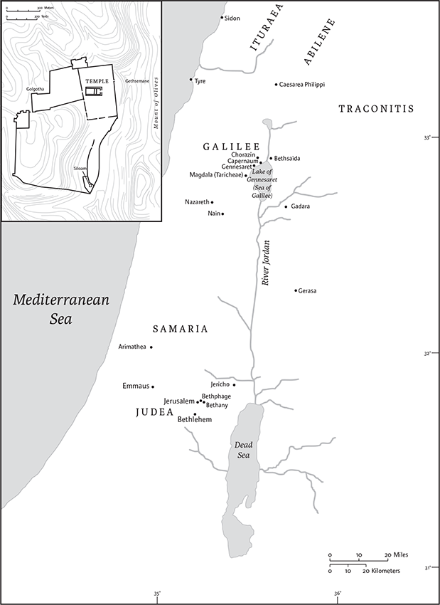

Luke
Name and Authorship
The Third Gospel, traditionally called the Gospel according to Luke, is a unique literary and theological contribution to the story of Jesus Christ. By the late second century, the author of the Gospel and its sequel, the Acts of the Apostles, was identified as Luke, a physician who was a traveling companion and co-worker with Paul (Philem 1.24; Col 4.14). At times Luke is further described as a Syrian from Antioch, but practically nothing else is remembered of the writer of the Third Gospel. Scholarly analysis of the Gospel and Acts raises questions about the attribution of these writings to the Luke who was Paul's associate. The strongest argument for identifying Luke the physician as the author of the Gospel and Acts is the obscurity of this figure in the New Testament. Yet, even defenders of the traditional identification recognize difficulties with that connection. Though Luke's familiarity with Judaism is extensive, he seems to have more book-knowledge than practical experience of its particular rituals and beliefs. Similarly, when Luke provides details about Palestinian locations and practices, they exhibit a tendency toward setting the story in an urban environment rather than the predominantly nonurban village culture that Jesus would have known. Above all, Luke never mentions in Acts that Paul wrote letters and only seldom does he use theological themes from the letters of the apostle.
Sources
Luke's Gospel employs other earlier writings, especially the Gospel of Mark. That Luke knew and used additional materials, both oral and written, in composing this Gospel is certain, if not demonstrable. In fact, Luke shares a body of material (probably in written form) with the Gospel of Matthew that comprises approximately one-fifth of the overall narrative. Scholars designate this common material as “Q” (German “Quelle,” “source”). Whether Luke had additional written sources for episodes and teaching found only in his Gospel—such as the account of Jesus's birth, childhood, certain parables, and materials unique to Luke's account of Jesus's passion and resurrection—is debated, though possible. Luke's concern with acknowledging and using sources is clear from his prologue (1.1–4). (See Introduction to the Gospels, p. 1777–80.)
Date and Place of Composition
The time and place of the writing of this Gospel are uncertain. Tradition associates Luke's account with both Antioch and Rome (where Acts ends), but no firm tradition specifies a precise time and place of composition. Any major urban center in the Greek-speaking areas of the Roman Empire would be a suitable location for such a document. As for its date, all one can say with certainty is that Luke wrote this account after Mark composed his Gospel; around 85 ce is plausible.
Style, Contents, and Structure
Luke employs different literary styles. The initial four verses are a single sentence that forms a highly stylized introductory statement typical of ancient historical writings. This formal and refined language was familiar to well-educated Greek-speakers in the first century ce. After this preface, the narrative shifts into a style of Greek reminiscent of the Septuagint, the Greek translation of the Jewish scriptures. This Semitic-influenced form of Greek permeates the stories about the birth of Jesus. The style shifts into a more commonly used form of first-century Greek (called “koinē”) for the remainder of the Gospel. In the story, the language varies to suit the locale and characters involved. Luke's appreciation of stylistic variation in narrative communication is apparent from this technique. One could say that the Gospel communicates the universal significance of its story of God's salvation in and through Jesus Christ in the variety of styles used to tell that story. Readers from different religious, ethnic, and social backgrounds would find a stylistic point of entry into the story of Jesus Christ.
Luke tells the same basic story as the other Gospels: Jesus appears, ministers in Galilee, and moves to Judea and Jerusalem where hostility leads to his suffering, death, and resurrection. Yet, Luke's account has a narrative logic and content that distinguish it from other Gospels. The advent of Jesus among Jews, who observed ancestral traditions, highlights the continuity of Jesus's story with that of Israel and presents it as the fulfillment of his people's hopes. Luke underscores God's compassion as Jesus reaches out to the marginal members of society. Women, the less-than-pious, tax collectors, the poor, the sick, the oppressed, and even prominent Pharisees interact with Jesus. As summarized in Acts, “Jesus of Nazareth … went about doing good … for God was with him” (Acts 10.38). Jesus's coming and his ministry are the result of God's anointing Jesus with the Holy Spirit. The same spirit of God active in the history of Israel is present in the infancy stories with which the Gospel begins, and reappears in Acts as the church spreads the message of salvation to the world.
Luke has structured the narrative carefully. A prologue (1.1–4) prepares readers for the significance of the story. The infancy and childhood of Jesus is told in a series of scenes that alternate with an account of the origins of John the Baptist so that readers understand the role of both these figures in God's plan of salvation to all humanity (1.5–2.52). Jesus prepares for his ministry through an encounter with John and testing by the devil (3.1–4.13); Jesus ministers in Galilee, provoking controversy, calling disciples, preaching, working miracles, teaching, commissioning ministry by his followers, and showing compassion for the people (4.14–9.50). Jesus and his followers journey to Jerusalem with Jesus providing instruction along the way (9.51–19.27). This section contains such famous parables as the prodigal son and the rich man and Lazarus. Jesus enters Jerusalem, where he starts teaching in the Temple area (19.28–21.38). The gospel concludes with Jesus's Last Supper, crucifixion, and burial (22.1–23.56), and Jesus's empty tomb is found before he appears to the disciples and ascends to heaven (24.1–53).
Interpretation
Initial incidents in the story anticipate later developments in the narrative. Readers will find signals that provoke questions that can be answered only by reading the whole Gospel. In the wake of Luke's presentation of the person and work of Jesus Christ, another dimension of the story communicates Jesus's teaching about what it means to be his follower. Discipleship is closely tied to the primary theme of Jesus's significance. For Luke, one is not a disciple alone, but only in belonging to the people of God who live as citizens of God's kingdom as made known in Jesus Christ.
Luke's account shows Jesus to be “the Lord,” God's son who is the universal savior of humanity. Jesus inaugurates a mission to all humankind as the kingdom of God draws near to the ordinary lives of people in Jesus. Luke's version of Jesus's story presents Jesus's coming as the fulfillment of God's promises of salvation. This event inaugurated the final stage of God's dealings with humanity in anticipation of “the day of the Lord.” Jesus himself and, in turn, his disciples call people to a new relationship to God and to other human beings.
Marion L. Soards
1
Since many have undertaken to set down an orderly account of the events that have been fulfilled among us, 2just as they were handed on to us by those who from the beginning were eyewitnesses and servants of the word, 3I too decided, after investigating everything carefully from the very first,a to write an orderly account for you, most excellent Theophilus, 4so that you may know the truth concerning the things about which you have been instructed.
5In the days of King Herod of Judea, there was a priest named Zechariah, who belonged to the priestly order of Abijah. His wife was a descendant of Aaron, and her name was Elizabeth. 6Both of them were righteous before God, living blamelessly according to all the commandments and regulations of the Lord. 7But they had no children, because Elizabeth was barren, and both were getting on in years.
8Once when he was serving as priest before God and his section was on duty, 9he was chosen by lot, according to the custom of the priesthood, to enter the sanctuary of the Lord and offer incense. 10Now at the time of the incense offering, the whole assembly of the people was praying outside. 11Then there appeared to him an angel of the Lord, standing at the right side of the altar of incense. 12When Zechariah saw him, he was terrified; and fear overwhelmed him. 13But the angel said to him, “Do not be afraid, Zechariah, for your prayer has been heard. Your wife Elizabeth will bear you a son, and you will name him John. 14You will have joy and gladness, and many will rejoice at his birth, 15for he will be great in the sight of the Lord. He must never drink wine or strong drink; even before his birth he will be filled with the Holy Spirit. 16He will turn many of the people of Israel to the Lord their God. 17With the spirit and power of Elijah he will go before him, to turn the hearts of parents to their children, and the disobedient to the wisdom of the righteous, to make ready a people prepared for the Lord.” 18Zechariah said to the angel, “How will I know that this is so? For I am an old man, and my wife is getting on in years.” 19The angel replied, “I am Gabriel. I stand in the presence of God, and I have been sent to speak to you and to bring you this good news. 20But now, because you did not believe my words, which will be fulfilled in their time, you will become mute, unable to speak, until the day these things occur.”
21Meanwhile the people were waiting for Zechariah, and wondered at his delay in the sanctuary. 22When he did come out, he could not speak to them, and they realized that he had seen a vision in the sanctuary. He kept motioning to them and remained unable to speak. 23When his time of service was ended, he went to his home.
24After those days his wife Elizabeth conceived, and for five months she remained in seclusion. She said, 25“This is what the Lord has done for me when he looked favorably on me and took away the disgrace I have endured among my people.”
26In the sixth month the angel Gabriel was sent by God to a town in Galilee called Nazareth, 27to a virgin engaged to a man whose name was Joseph, of the house of David. The virgin's name was Mary. 28And he came to her and said, “Greetings, favored one! The Lord is with you.”a 29But she was much perplexed by his words and pondered what sort of greeting this might be. 30The angel said to her, “Do not be afraid, Mary, for you have found favor with God. 31And now, you will conceive in your womb and bear a son, and you will name him Jesus. 32He will be great, and will be called the Son of the Most High, and the Lord God will give to him the throne of his ancestor David. 33He will reign over the house of Jacob forever, and of his kingdom there will be no end.” 34Mary said to the angel, “How can this be, since I am a virgin?”b 35The angel said to her, “The Holy Spirit will come upon you, and the power of the Most High will overshadow you; therefore the child to be bornc will be holy; he will be called Son of God. 36And now, your relative Elizabeth in her old age has also conceived a son; and this is the sixth month for her who was said to be barren. 37For nothing will be impossible with God.” 38Then Mary said, “Here am I, the servant of the Lord; let it be with me according to your word.” Then the angel departed from her.
39In those days Mary set out and went with haste to a Judean town in the hill country, 40where she entered the house of Zechariah and greeted Elizabeth. 41When Elizabeth heard Mary's greeting, the child leaped in her womb. And Elizabeth was filled with the Holy Spirit 42and exclaimed with a loud cry, “Blessed are you among women, and blessed is the fruit of your womb. 43And why has this happened to me, that the mother of my Lord comes to me? 44For as soon as I heard the sound of your greeting, the child in my womb leaped for joy. 45And blessed is she who believed that there would bed a fulfillment of what was spoken to her by the Lord.”
“My soul magnifies the Lord,
47and my spirit rejoices in God my Savior,
48for he has looked with favor on the
lowliness of his servant.
Surely, from now on all generations will call me blessed;
49for the Mighty One has done great things for me,
and holy is his name.
50His mercy is for those who fear him
from generation to generation.
51He has shown strength with his arm;
he has scattered the proud in the thoughts of their hearts.
52He has brought down the powerful from their thrones,
and lifted up the lowly;
53he has filled the hungry with good things,
and sent the rich away empty.
54He has helped his servant Israel,
in remembrance of his mercy,
55according to the promise he made to our ancestors,
to Abraham and to his descendants forever.”
56And Mary remained with her about three months and then returned to her home.
57Now the time came for Elizabeth to give birth, and she bore a son. 58Her neighbors and relatives heard that the Lord had shown his great mercy to her, and they rejoiced with her.
59On the eighth day they came to circumcise the child, and they were going to name him Zechariah after his father. 60But his mother said, “No; he is to be called John.” 61They said to her, “None of your relatives has this name.” 62Then they began motioning to his father to find out what name he wanted to give him. 63He asked for a writing tablet and wrote, “His name is John.” And all of them were amazed. 64Immediately his mouth was opened and his tongue freed, and he began to speak, praising God. 65Fear came over all their neighbors, and all these things were talked about throughout the entire hill country of Judea. 66All who heard them pondered them and said, “What then will this child become?” For, indeed, the hand of the Lord was with him.
67Then his father Zechariah was filled with the Holy Spirit and spoke this prophecy:
68“Blessed be the Lord God of Israel,
for he has looked favorably on his people and redeemed them.
69He has raised up a mighty saviora for us
in the house of his servant David,
70as he spoke through the mouth of his holy prophets from of old,
71that we would be saved from our enemies and from the hand of all who hate us.
72Thus he has shown the mercy promised to our ancestors,
and has remembered his holy covenant,
73the oath that he swore to our ancestor Abraham,
to grant us 74that we, being rescued from the hands of our enemies,
might serve him without fear, 75in holiness and righteousness
before him all our days.
76And you, child, will be called the prophet of the Most High;
for you will go before the Lord to prepare his ways,
77to give knowledge of salvation to his people
by the forgiveness of their sins.
78By the tender mercy of our God,
the dawn from on high will break upona us,
79to give light to those who sit in darkness
and in the shadow of death,
to guide our feet into the way of peace.”
80The child grew and became strong in spirit, and he was in the wilderness until the day he appeared publicly to Israel.
2
In those days a decree went out from Emperor Augustus that all the world should be registered. 2This was the first registration and was taken while Quirinius was governor of Syria. 3All went to their own towns to be registered. 4Joseph also went from the town of Nazareth in Galilee to Judea, to the city of David called Bethlehem, because he was descended from the house and family of David. 5He went to be registered with Mary, to whom he was engaged and who was expecting a child. 6While they were there, the time came for her to deliver her child. 7And she gave birth to her firstborn son and wrapped him in bands of cloth, and laid him in a manger, because there was no place for them in the inn.
8In that region there were shepherds living in the fields, keeping watch over their flock by night. 9Then an angel of the Lord stood before them, and the glory of the Lord shone around them, and they were terrified. 10But the angel said to them, “Do not be afraid; for see—I am bringing you good news of great joy for all the people: 11to you is born this day in the city of David a Savior, who is the Messiah,b the Lord. 12This will be a sign for you: you will find a child wrapped in bands of cloth and lying in a manger.” 13And suddenly there was with the angel a multitude of the heavenly host,c praising God and saying,
15When the angels had left them and gone into heaven, the shepherds said to one another, “Let us go now to Bethlehem and see this thing that has taken place, which the Lord has made known to us.” 16So they went with haste and found Mary and Joseph, and the child lying in the manger. 17When they saw this, they made known what had been told them about this child; 18and all who heard it were amazed at what the shepherds told them. 19But Mary treasured all these words and pondered them in her heart. 20The shepherds returned, glorifying and praising God for all they had heard and seen, as it had been told them.
21After eight days had passed, it was time to circumcise the child; and he was called Jesus, the name given by the angel before he was conceived in the womb.
22When the time came for their purification according to the law of Moses, they brought him up to Jerusalem to present him to the Lord 23(as it is written in the law of the Lord, “Every firstborn male shall be designated as holy to the Lord”), 24and they offered a sacrifice according to what is stated in the law of the Lord, “a pair of turtledoves or two young pigeons.”
25Now there was a man in Jerusalem whose name was Simeon;a this man was righteous and devout, looking forward to the consolation of Israel, and the Holy Spirit rested on him. 26It had been revealed to him by the Holy Spirit that he would not see death before he had seen the Lord's Messiah.b 27Guided by the Spirit, Simeonc came into the temple; and when the parents brought in the child Jesus, to do for him what was customary under the law, 28Simeond took him in his arms and praised God, saying,
33And the child's father and mother were amazed at what was being said about him.
34Then Simeona blessed them and said to his mother Mary, “This child is destined for the falling and the rising of many in Israel, and to be a sign that will be opposed 35so that the inner thoughts of many will be revealed—and a sword will pierce your own soul too.”
36There was also a prophet, Annaf the daughter of Phanuel, of the tribe of Asher. She was of a great age, having lived with her husband seven years after her marriage, 37then as a widow to the age of eighty-four. She never left the temple but worshiped there with fasting and prayer night and day. 38At that moment she came, and began to praise God and to speak about the childg to all who were looking for the redemption of Jerusalem.
39When they had finished everything required by the law of the Lord, they returned to Galilee, to their own town of Nazareth. 40The child grew and became strong, filled with wisdom; and the favor of God was upon him.
41Now every year his parents went to Jerusalem for the festival of the Passover. 42And when he was twelve years old, they went up as usual for the festival. 43When the festival was ended and they started to return, the boy Jesus stayed behind in Jerusalem, but his parents did not know it. 44Assuming that he was in the group of travelers, they went a day's journey. Then they started to look for him among their relatives and friends. 45When they did not find him, they returned to Jerusalem to search for him. 46After three days they found him in the temple, sitting among the teachers, listening to them and asking them questions. 47And all who heard him were amazed at his understanding and his answers. 48When his parentsa saw him they were astonished; and his mother said to him, “Child, why have you treated us like this? Look, your father and I have been searching for you in great anxiety.” 49He said to them, “Why were you searching for me? Did you not know that I must be in my Father's house?”b 50But they did not understand what he said to them. 51Then he went down with them and came to Nazareth, and was obedient to them. His mother treasured all these things in her heart.
52And Jesus increased in wisdom and in years,c and in divine and human favor.
3
In the fifteenth year of the reign of Emperor Tiberius, when Pontius Pilate was governor of Judea, and Herod was rulerd of Galilee, and his brother Philip rulerd of the region of Ituraea and Trachonitis, and Lysanias rulerd of Abilene, 2during the high priesthood of Annas and Caiaphas, the word of God came to John son of Zechariah in the wilderness. 3He went into all the region around the Jordan, proclaiming a baptism of repentance for the forgiveness of sins, 4as it is written in the book of the words of the prophet Isaiah,
“The voice of one crying out in the wilderness:
‘Prepare the way of the Lord,
make his paths straight.
5Every valley shall be filled,
and every mountain and hill shall be made low,
and the crooked shall be made straight,
and the rough ways made smooth;
6and all flesh shall see the salvation of God.’”
7John said to the crowds that came out to be baptized by him, “You brood of vipers! Who warned you to flee from the wrath to come? 8Bear fruits worthy of repentance. Do not begin to say to yourselves, ‘We have Abraham as our ancestor’; for I tell you, God is able from these stones to raise up children to Abraham. 9Even now the ax is lying at the root of the trees; every tree therefore that does not bear good fruit is cut down and thrown into the fire.”
10And the crowds asked him, “What then should we do?” 11In reply he said to them, “Whoever has two coats must share with anyone who has none; and whoever has food must do likewise.” 12Even tax collectors came to be baptized, and they asked him, “Teacher, what should we do?” 13He said to them, “Collect no more than the amount prescribed for you.” 14Soldiers also asked him, “And we, what should we do?” He said to them, “Do not extort money from anyone by threats or false accusation, and be satisfied with your wages.”
15As the people were filled with expectation, and all were questioning in their hearts concerning John, whether he might be the Messiah,a 16John answered all of them by saying, “I baptize you with water; but one who is more powerful than I is coming; I am not worthy to untie the thong of his sandals. He will baptize you withb the Holy Spirit and fire. 17His winnowing fork is in his hand, to clear his threshing floor and to gather the wheat into his granary; but the chaff he will burn with unquenchable fire.”
18So, with many other exhortations, he proclaimed the good news to the people. 19But Herod the ruler,c who had been rebuked by him because of Herodias, his brother's wife, and because of all the evil things that Herod had done, 20added to them all by shutting up John in prison.
21Now when all the people were baptized, and when Jesus also had been baptized and was praying, the heaven was opened, 22and the Holy Spirit descended upon him in bodily form like a dove. And a voice came from heaven, “You are my Son, the Beloved;d with you I am well pleased.”e
23Jesus was about thirty years old when he began his work. He was the son (as was thought) of Joseph son of Heli, 24son of Matthat, son of Levi, son of Melchi, son of Jannai, son of Joseph, 25son of Mattathias, son of Amos, son of Nahum, son of Esli, son of Naggai, 26son of Maath, son of Mattathias, son of Semein, son of Josech, son of Joda, 27son of Joanan, son of Rhesa, son of Zerubbabel, son of Shealtiel,a son of Neri, 28son of Melchi, son of Addi, son of Cosam, son of Elmadam, son of Er, 29son of Joshua, son of Eliezer, son of Jorim, son of Matthat, son of Levi, 30son of Simeon, son of Judah, son of Joseph, son of Jonam, son of Eliakim, 31son of Melea, son of Menna, son of Mattatha, son of Nathan, son of David, 32son of Jesse, son of Obed, son of Boaz, son of Sala,b son of Nahshon, 33son of Amminadab, son of Admin, son of Arni,c son of Hezron, son of Perez, son of Judah, 34son of Jacob, son of Isaac, son of Abraham, son of Terah, son of Nahor, 35son of Serug, son of Reu, son of Peleg, son of Eber, son of Shelah, 36son of Cainan, son of Arphaxad, son of Shem, son of Noah, son of Lamech, 37son of Methuselah, son of Enoch, son of Jared, son of Mahalaleel, son of Cainan, 38son of Enos, son of Seth, son of Adam, son of God.
4
Jesus, full of the Holy Spirit, returned from the Jordan and was led by the Spirit in the wilderness, 2where for forty days he was tempted by the devil. He ate nothing at all during those days, and when they were over, he was famished. 3The devil said to him, “If you are the Son of God, command this stone to become a loaf of bread.” 4Jesus answered him, “It is written, ‘One does not live by bread alone.’”
5Then the devild led him up and showed him in an instant all the kingdoms of the world. 6And the devild said to him, “To you I will give their glory and all this authority; for it has been given over to me, and I give it to anyone I please. 7If you, then, will worship me, it will all be yours.” 8Jesus answered him, “It is written,
‘Worship the Lord your God,
and serve only him.’”
9Then the devild took him to Jerusalem, and placed him on the pinnacle of the temple, saying to him, “If you are the Son of God, throw yourself down from here, 10for it is written,
‘He will command his angels concerning you,
to protect you,’
11and
‘On their hands they will bear you up,
so that you will not dash your foot against a stone.’”
12Jesus answered him, “It is said, ‘Do not put the Lord your God to the test.’” 13When the devil had finished every test, he departed from him until an opportune time.
14Then Jesus, filled with the power of the Spirit, returned to Galilee, and a report about him spread through all the surrounding country. 15He began to teach in their synagogues and was praised by everyone.
16When he came to Nazareth, where he had been brought up, he went to the synagogue on the sabbath day, as was his custom. He stood up to read, 17and the scroll of the prophet Isaiah was given to him. He unrolled the scroll and found the place where it was written:
20And he rolled up the scroll, gave it back to the attendant, and sat down. The eyes of all in the synagogue were fixed on him. 21Then he began to say to them, “Today this scripture has been fulfilled in your hearing.” 22All spoke well of him and were amazed at the gracious words that came from his mouth. They said, “Is not this Joseph's son?” 23He said to them, “Doubtless you will quote to me this proverb, ‘Doctor, cure yourself!’ And you will say, ‘Do here also in your hometown the things that we have heard you did at Capernaum.’” 24And he said, “Truly I tell you, no prophet is accepted in the prophet's hometown. 25But the truth is, there were many widows in Israel in the time of Elijah, when the heaven was shut up three years and six months, and there was a severe famine over all the land; 26yet Elijah was sent to none of them except to a widow at Zarephath in Sidon. 27There were also many lepersa in Israel in the time of the prophet Elisha, and none of them was cleansed except Naaman the Syrian.” 28When they heard this, all in the synagogue were filled with rage. 29They got up, drove him out of the town, and led him to the brow of the hill on which their town was built, so that they might hurl him off the cliff. 30But he passed through the midst of them and went on his way.
31He went down to Capernaum, a city in Galilee, and was teaching them on the sabbath. 32They were astounded at his teaching, because he spoke with authority. 33In the synagogue there was a man who had the spirit of an unclean demon, and he cried out with a loud voice, 34“Let us alone! What have you to do with us, Jesus of Nazareth? Have you come to destroy us? I know who you are, the Holy One of God.” 35But Jesus rebuked him, saying, “Be silent, and come out of him!” When the demon had thrown him down before them, he came out of him without having done him any harm. 36They were all amazed and kept saying to one another, “What kind of utterance is this? For with authority and power he commands the unclean spirits, and out they come!” 37And a report about him began to reach every place in the region.
38After leaving the synagogue he entered Simon's house. Now Simon's mother-in-law was suffering from a high fever, and they asked him about her. 39Then he stood over her and rebuked the fever, and it left her. Immediately she got up and began to serve them.
40As the sun was setting, all those who had any who were sick with various kinds of diseases brought them to him; and he laid his hands on each of them and cured them. 41Demons also came out of many, shouting, “You are the Son of God!” But he rebuked them and would not allow them to speak, because they knew that he was the Messiah.a
42At daybreak he departed and went into a deserted place. And the crowds were looking for him; and when they reached him, they wanted to prevent him from leaving them. 43But he said to them, “I must proclaim the good news of the kingdom of God to the other cities also; for I was sent for this purpose.” 44So he continued proclaiming the message in the synagogues of Judea.b
5
Once while Jesusc was standing beside the lake of Gennesaret, and the crowd was pressing in on him to hear the word of God, 2he saw two boats there at the shore of the lake; the fishermen had gone out of them and were washing their nets. 3He got into one of the boats, the one belonging to Simon, and asked him to put out a little way from the shore. Then he sat down and taught the crowds from the boat. 4When he had finished speaking, he said to Simon, “Put out into the deep water and let down your nets for a catch.” 5Simon answered, “Master, we have worked all night long but have caught nothing. Yet if you say so, I will let down the nets.” 6When they had done this, they caught so many fish that their nets were beginning to break. 7So they signaled their partners in the other boat to come and help them. And they came and filled both boats, so that they began to sink. 8But when Simon Peter saw it, he fell down at Jesus’ knees, saying, “Go away from me, Lord, for I am a sinful man!” 9For he and all who were with him were amazed at the catch of fish that they had taken; 10and so also were James and John, sons of Zebedee, who were partners with Simon. Then Jesus said to Simon, “Do not be afraid; from now on you will be catching people.” 11When they had brought their boats to shore, they left everything and followed him.
12Once, when he was in one of the cities, there was a man covered with leprosy.d When he saw Jesus, he bowed with his face to the ground and begged him, “Lord, if you choose, you can make me clean.” 13Then Jesusc stretched out his hand, touched him, and said, “I do choose. Be made clean.” Immediately the leprosyd left him. 14And he ordered him to tell no one. “Go,” he said, “and show yourself to the priest, and, as Moses commanded, make an offering for your cleansing, for a testimony to them.” 15But now more than ever the word about Jesuse spread abroad; many crowds would gather to hear him and to be cured of their diseases. 16But he would withdraw to deserted places and pray.
17One day, while he was teaching, Pharisees and teachers of the law were sitting near by (they had come from every village of Galilee and Judea and from Jerusalem); and the power of the Lord was with him to heal.a 18Just then some men came, carrying a paralyzed man on a bed. They were trying to bring him in and lay him before Jesus;b 19but finding no way to bring him in because of the crowd, they went up on the roof and let him down with his bed through the tiles into the middle of the crowdc in front of Jesus. 20When he saw their faith, he said, “Friend,d your sins are forgiven you.” 21Then the scribes and the Pharisees began to question, “Who is this who is speaking blasphemies? Who can forgive sins but God alone?” 22When Jesus perceived their questionings, he answered them, “Why do you raise such questions in your hearts? 23Which is easier, to say, ‘Your sins are forgiven you,’ or to say, ‘Stand up and walk’? 24But so that you may know that the Son of Man has authority on earth to forgive sins”—he said to the one who was paralyzed—“I say to you, stand up and take your bed and go to your home.” 25Immediately he stood up before them, took what he had been lying on, and went to his home, glorifying God. 26Amazement seized all of them, and they glorified God and were filled with awe, saying, “We have seen strange things today.”
27After this he went out and saw a tax collector named Levi, sitting at the tax booth; and he said to him, “Follow me.” 28And he got up, left everything, and followed him.
29Then Levi gave a great banquet for him in his house; and there was a large crowd of tax collectors and others sitting at the tablee with them. 30The Pharisees and their scribes were complaining to his disciples, saying, “Why do you eat and drink with tax collectors and sinners?” 31Jesus answered, “Those who are well have no need of a physician, but those who are sick; 32I have come to call not the righteous but sinners to repentance.”
33Then they said to him, “John's disciples, like the disciples of the Pharisees, frequently fast and pray, but your disciples eat and drink.” 34Jesus said to them, “You cannot make wedding guests fast while the bridegroom is with them, can you? 35The days will come when the bridegroom will be taken away from them, and then they will fast in those days.” 36He also told them a parable: “No one tears a piece from a new garment and sews it on an old garment; otherwise the new will be torn, and the piece from the new will not match the old. 37And no one puts new wine into old wineskins; otherwise the new wine will burst the skins and will be spilled, and the skins will be destroyed. 38But new wine must be put into fresh wineskins. 39And no one after drinking old wine desires new wine, but says, ‘The old is good.’”a
6
One sabbathb while Jesusc was going through the grainfields, his disciples plucked some heads of grain, rubbed them in their hands, and ate them. 2But some of the Pharisees said, “Why are you doing what is not lawfuld on the sabbath?” 3Jesus answered, “Have you not read what David did when he and his companions were hungry? 4He entered the house of God and took and ate the bread of the Presence, which it is not lawful for any but the priests to eat, and gave some to his companions?” 5Then he said to them, “The Son of Man is lord of the sabbath.”
6On another sabbath he entered the synagogue and taught, and there was a man there whose right hand was withered. 7The scribes and the Pharisees watched him to see whether he would cure on the sabbath, so that they might find an accusation against him. 8Even though he knew what they were thinking, he said to the man who had the withered hand, “Come and stand here.” He got up and stood there. 9Then Jesus said to them, “I ask you, is it lawful to do good or to do harm on the sabbath, to save life or to destroy it?” 10After looking around at all of them, he said to him, “Stretch out your hand.” He did so, and his hand was restored. 11But they were filled with fury and discussed with one another what they might do to Jesus.
12Now during those days he went out to the mountain to pray; and he spent the night in prayer to God. 13And when day came, he called his disciples and chose twelve of them, whom he also named apostles: 14Simon, whom he named Peter, and his brother Andrew, and James, and John, and Philip, and Bartholomew, 15and Matthew, and Thomas, and James son of Alphaeus, and Simon, who was called the Zealot, 16and Judas son of James, and Judas Iscariot, who became a traitor.
17He came down with them and stood on a level place, with a great crowd of his disciples and a great multitude of people from all Judea, Jerusalem, and the coast of Tyre and Sidon. 18They had come to hear him and to be healed of their diseases; and those who were troubled with unclean spirits were cured. 19And all in the crowd were trying to touch him, for power came out from him and healed all of them.
22“Blessed are you when people hate you, and when they exclude you, revile you, and defame youa on account of the Son of Man. 23Rejoice in that day and leap for joy, for surely your reward is great in heaven; for that is what their ancestors did to the prophets.
26“Woe to you when all speak well of you, for that is what their ancestors did to the false prophets.
27“But I say to you that listen, Love your enemies, do good to those who hate you, 28bless those who curse you, pray for those who abuse you. 29If anyone strikes you on the cheek, offer the other also; and from anyone who takes away your coat do not withhold even your shirt. 30Give to everyone who begs from you; and if anyone takes away your goods, do not ask for them again. 31Do to others as you would have them do to you.
32“If you love those who love you, what credit is that to you? For even sinners love those who love them. 33If you do good to those who do good to you, what credit is that to you? For even sinners do the same. 34If you lend to those from whom you hope to receive, what credit is that to you? Even sinners lend to sinners, to receive as much again. 35But love your enemies, do good, and lend, expecting nothing in return.b Your reward will be great, and you will be children of the Most High; for he is kind to the ungrateful and the wicked. 36Be merciful, just as your Father is merciful.
37“Do not judge, and you will not be judged; do not condemn, and you will not be condemned. Forgive, and you will be forgiven; 38give, and it will be given to you. A good measure, pressed down, shaken together, running over, will be put into your lap; for the measure you give will be the measure you get back.”
39He also told them a parable: “Can a blind person guide a blind person? Will not both fall into a pit? 40A disciple is not above the teacher, but everyone who is fully qualified will be like the teacher. 41Why do you see the speck in your neighbor'sc eye, but do not notice the log in your own eye? 42Or how can you say to your neighbor,a ‘Friend,a let me take out the speck in your eye,’ when you yourself do not see the log in your own eye? You hypocrite, first take the log out of your own eye, and then you will see clearly to take the speck out of your neighbor'sb eye.
43“No good tree bears bad fruit, nor again does a bad tree bear good fruit; 44for each tree is known by its own fruit. Figs are not gathered from thorns, nor are grapes picked from a bramble bush. 45The good person out of the good treasure of the heart produces good, and the evil person out of evil treasure produces evil; for it is out of the abundance of the heart that the mouth speaks.
46“Why do you call me ‘Lord, Lord,’ and do not do what I tell you? 47I will show you what someone is like who comes to me, hears my words, and acts on them. 48That one is like a man building a house, who dug deeply and laid the foundation on rock; when a flood arose, the river burst against that house but could not shake it, because it had been well built.c 49But the one who hears and does not act is like a man who built a house on the ground without a foundation. When the river burst against it, immediately it fell, and great was the ruin of that house.”
7
After Jesusd had finished all his sayings in the hearing of the people, he entered Capernaum. 2A centurion there had a slave whom he valued highly, and who was ill and close to death. 3When he heard about Jesus, he sent some Jewish elders to him, asking him to come and heal his slave. 4When they came to Jesus, they appealed to him earnestly, saying, “He is worthy of having you do this for him, 5for he loves our people, and it is he who built our synagogue for us.” 6And Jesus went with them, but when he was not far from the house, the centurion sent friends to say to him, “Lord, do not trouble yourself, for I am not worthy to have you come under my roof; 7therefore I did not presume to come to you. But only speak the word, and let my servant be healed. 8For I also am a man set under authority, with soldiers under me; and I say to one, ‘Go,’ and he goes, and to another, ‘Come,’ and he comes, and to my slave, ‘Do this,’ and the slave does it.” 9When Jesus heard this he was amazed at him, and turning to the crowd that followed him, he said, “I tell you, not even in Israel have I found such faith.” 10When those who had been sent returned to the house, they found the slave in good health.
11Soon afterwardse he went to a town called Nain, and his disciples and a large crowd went with him. 12As he approached the gate of the town, a man who had died was being carried out. He was his mother's only son, and she was a widow; and with her was a large crowd from the town. 13When the Lord saw her, he had compassion for her and said to her, “Do not weep.” 14Then he came forward and touched the bier, and the bearers stood still. And he said, “Young man, I say to you, rise!” 15The dead man sat up and began to speak, and Jesusa gave him to his mother. 16Fear seized all of them; and they glorified God, saying, “A great prophet has risen among us!” and “God has looked favorably on his people!” 17This word about him spread throughout Judea and all the surrounding country.
18The disciples of John reported all these things to him. So John summoned two of his disciples 19and sent them to the Lord to ask, “Are you the one who is to come, or are we to wait for another?” 20When the men had come to him, they said, “John the Baptist has sent us to you to ask, ‘Are you the one who is to come, or are we to wait for another?’” 21Jesusb had just then cured many people of diseases, plagues, and evil spirits, and had given sight to many who were blind. 22And he answered them, “Go and tell John what you have seen and heard: the blind receive their sight, the lame walk, the lepersc are cleansed, the deaf hear, the dead are raised, the poor have good news brought to them. 23And blessed is anyone who takes no offense at me.”
24When John's messengers had gone, Jesusa began to speak to the crowds about John:d “What did you go out into the wilderness to look at? A reed shaken by the wind? 25What then did you go out to see? Someonee dressed in soft robes? Look, those who put on fine clothing and live in luxury are in royal palaces. 26What then did you go out to see? A prophet? Yes, I tell you, and more than a prophet. 27This is the one about whom it is written,
‘See, I am sending my messenger ahead of you,
who will prepare your way before you.’
28I tell you, among those born of women no one is greater than John; yet the least in the kingdom of God is greater than he.” 29(And all the people who heard this, including the tax collectors, acknowledged the justice of God,f because they had been baptized with John's baptism. 30But by refusing to be baptized by him, the Pharisees and the lawyers rejected God's purpose for themselves.)
31“To what then will I compare the people of this generation, and what are they like? 32They are like children sitting in the marketplace and calling to one another,
‘We played the flute for you, and you did not dance;
we wailed, and you did not weep.’
33For John the Baptist has come eating no bread and drinking no wine, and you say, ‘He has a demon’; 34the Son of Man has come eating and drinking, and you say, ‘Look, a glutton and a drunkard, a friend of tax collectors and sinners!’ 35Nevertheless, wisdom is vindicated by all her children.”
36One of the Pharisees asked Jesusd to eat with him, and he went into the Pharisee's house and took his place at the table. 37And a woman in the city, who was a sinner, having learned that he was eating in the Pharisee's house, brought an alabaster jar of ointment. 38She stood behind him at his feet, weeping, and began to bathe his feet with her tears and to dry them with her hair. Then she continued kissing his feet and anointing them with the ointment. 39Now when the Pharisee who had invited him saw it, he said to himself, “If this man were a prophet, he would have known who and what kind of woman this is who is touching him—that she is a sinner.” 40Jesus spoke up and said to him, “Simon, I have something to say to you.” “Teacher,” he replied, “speak.” 41“A certain creditor had two debtors; one owed five hundred denarii,a and the other fifty. 42When they could not pay, he canceled the debts for both of them. Now which of them will love him more?” 43Simon answered, “I suppose the one for whom he canceled the greater debt.” And Jesusb said to him, “You have judged rightly.” 44Then turning toward the woman, he said to Simon, “Do you see this woman? I entered your house; you gave me no water for my feet, but she has bathed my feet with her tears and dried them with her hair. 45You gave me no kiss, but from the time I came in she has not stopped kissing my feet. 46You did not anoint my head with oil, but she has anointed my feet with ointment. 47Therefore, I tell you, her sins, which were many, have been forgiven; hence she has shown great love. But the one to whom little is forgiven, loves little.” 48Then he said to her, “Your sins are forgiven.” 49But those who were at the table with him began to say among themselves, “Who is this who even forgives sins?” 50And he said to the woman, “Your faith has saved you; go in peace.”
8
Soon afterwards he went on through cities and villages, proclaiming and bringing the good news of the kingdom of God. The twelve were with him, 2as well as some women who had been cured of evil spirits and infirmities: Mary, called Magdalene, from whom seven demons had gone out, 3and Joanna, the wife of Herod's steward Chuza, and Susanna, and many others, who provided for themc out of their resources.
4When a great crowd gathered and people from town after town came to him, he said in a parable: 5“A sower went out to sow his seed; and as he sowed, some fell on the path and was trampled on, and the birds of the air ate it up. 6Some fell on the rock; and as it grew up, it withered for lack of moisture. 7Some fell among thorns, and the thorns grew with it and choked it. 8Some fell into good soil, and when it grew, it produced a hundredfold.” As he said this, he called out, “Let anyone with ears to hear listen!”
9Then his disciples asked him what this parable meant. 10He said, “To you it has been given to know the secretsa of the kingdom of God; but to others I speakb in parables, so that
‘looking they may not perceive,
and listening they may not understand.’
11“Now the parable is this: The seed is the word of God. 12The ones on the path are those who have heard; then the devil comes and takes away the word from their hearts, so that they may not believe and be saved. 13The ones on the rock are those who, when they hear the word, receive it with joy. But these have no root; they believe only for a while and in a time of testing fall away. 14As for what fell among the thorns, these are the ones who hear; but as they go on their way, they are choked by the cares and riches and pleasures of life, and their fruit does not mature. 15But as for that in the good soil, these are the ones who, when they hear the word, hold it fast in an honest and good heart, and bear fruit with patient endurance.
16“No one after lighting a lamp hides it under a jar, or puts it under a bed, but puts it on a lampstand, so that those who enter may see the light. 17For nothing is hidden that will not be disclosed, nor is anything secret that will not become known and come to light. 18Then pay attention to how you listen; for to those who have, more will be given; and from those who do not have, even what they seem to have will be taken away.”
19Then his mother and his brothers came to him, but they could not reach him because of the crowd. 20And he was told, “Your mother and your brothers are standing outside, wanting to see you.” 21But he said to them, “My mother and my brothers are those who hear the word of God and do it.”
22One day he got into a boat with his disciples, and he said to them, “Let us go across to the other side of the lake.” So they put out, 23and while they were sailing he fell asleep. A windstorm swept down on the lake, and the boat was filling with water, and they were in danger. 24They went to him and woke him up, shouting, “Master, Master, we are perishing!” And he woke up and rebuked the wind and the raging waves; they ceased, and there was a calm. 25He said to them, “Where is your faith?” They were afraid and amazed, and said to one another, “Who then is this, that he commands even the winds and the water, and they obey him?”
26Then they arrived at the country of the Gerasenes,c which is opposite Galilee. 27As he stepped out on land, a man of the city who had demons met him. For a long time he had worna no clothes, and he did not live in a house but in the tombs. 28When he saw Jesus, he fell down before him and shouted at the top of his voice, “What have you to do with me, Jesus, Son of the Most High God? I beg you, do not torment me”—29for Jesusb had commanded the unclean spirit to come out of the man. (For many times it had seized him; he was kept under guard and bound with chains and shackles, but he would break the bonds and be driven by the demon into the wilds.) 30Jesus then asked him, “What is your name?” He said, “Legion”; for many demons had entered him. 31They begged him not to order them to go back into the abyss.
32Now there on the hillside a large herd of swine was feeding; and the demonsc begged Jesusd to let them enter these. So he gave them permission. 33Then the demons came out of the man and entered the swine, and the herd rushed down the steep bank into the lake and was drowned.
34When the swineherds saw what had happened, they ran off and told it in the city and in the country. 35Then people came out to see what had happened, and when they came to Jesus, they found the man from whom the demons had gone sitting at the feet of Jesus, clothed and in his right mind. And they were afraid. 36Those who had seen it told them how the one who had been possessed by demons had been healed. 37Then all the people of the surrounding country of the Gerasenese asked Jesusd to leave them; for they were seized with great fear. So he got into the boat and returned. 38The man from whom the demons had gone begged that he might be with him; but Jesusb sent him away, saying, 39“Return to your home, and declare how much God has done for you.” So he went away, proclaiming throughout the city how much Jesus had done for him.
40Now when Jesus returned, the crowd welcomed him, for they were all waiting for him. 41Just then there came a man named Jairus, a leader of the synagogue. He fell at Jesus’ feet and begged him to come to his house, 42for he had an only daughter, about twelve years old, who was dying.
As he went, the crowds pressed in on him. 43Now there was a woman who had been suffering from hemorrhages for twelve years; and though she had spent all she had on physicians,f no one could cure her. 44She came up behind him and touched the fringe of his clothes, and immediately her hemorrhage stopped. 45Then Jesus asked, “Who touched me?” When all denied it, Peterg said, “Master, the crowds surround you and press in on you.” 46But Jesus said, “Someone touched me; for I noticed that power had gone out from me.” 47When the woman saw that she could not remain hidden, she came trembling; and falling down before him, she declared in the presence of all the people why she had touched him, and how she had been immediately healed. 48He said to her, “Daughter, your faith has made you well; go in peace.”
49While he was still speaking, someone came from the leader's house to say, “Your daughter is dead; do not trouble the teacher any longer.” 50When Jesus heard this, he replied, “Do not fear. Only believe, and she will be saved.” 51When he came to the house, he did not allow anyone to enter with him, except Peter, John, and James, and the child's father and mother. 52They were all weeping and wailing for her; but he said, “Do not weep; for she is not dead but sleeping.” 53And they laughed at him, knowing that she was dead. 54But he took her by the hand and called out, “Child, get up!” 55Her spirit returned, and she got up at once. Then he directed them to give her something to eat. 56Her parents were astounded; but he ordered them to tell no one what had happened.
9
Then Jesusa called the twelve together and gave them power and authority over all demons and to cure diseases, 2and he sent them out to proclaim the kingdom of God and to heal. 3He said to them, “Take nothing for your journey, no staff, nor bag, nor bread, nor money—not even an extra tunic. 4Whatever house you enter, stay there, and leave from there. 5Wherever they do not welcome you, as you are leaving that town shake the dust off your feet as a testimony against them.” 6They departed and went through the villages, bringing the good news and curing diseases everywhere.
7Now Herod the rulerb heard about all that had taken place, and he was perplexed, because it was said by some that John had been raised from the dead, 8by some that Elijah had appeared, and by others that one of the ancient prophets had arisen. 9Herod said, “John I beheaded; but who is this about whom I hear such things?” And he tried to see him.
10On their return the apostles told Jesusc all they had done. He took them with him and withdrew privately to a city called Bethsaida. 11When the crowds found out about it, they followed him; and he welcomed them, and spoke to them about the kingdom of God, and healed those who needed to be cured.
12The day was drawing to a close, and the twelve came to him and said, “Send the crowd away, so that they may go into the surrounding villages and countryside, to lodge and get provisions; for we are here in a deserted place.” 13But he said to them, “You give them something to eat.” They said, “We have no more than five loaves and two fish—unless we are to go and buy food for all these people.” 14For there were about five thousand men. And he said to his disciples, “Make them sit down in groups of about fifty each.” 15They did so and made them all sit down. 16And taking the five loaves and the two fish, he looked up to heaven, and blessed and broke them, and gave them to the disciples to set before the crowd. 17And all ate and were filled. What was left over was gathered up, twelve baskets of broken pieces.
18Once when Jesusa was praying alone, with only the disciples near him, he asked them, “Who do the crowds say that I am?” 19They answered, “John the Baptist; but others, Elijah; and still others, that one of the ancient prophets has arisen.” 20He said to them, “But who do you say that I am?” Peter answered, “The Messiahb of God.”
21He sternly ordered and commanded them not to tell anyone, 22saying, “The Son of Man must undergo great suffering, and be rejected by the elders, chief priests, and scribes, and be killed, and on the third day be raised.”
23Then he said to them all, “If any want to become my followers, let them deny themselves and take up their cross daily and follow me. 24For those who want to save their life will lose it, and those who lose their life for my sake will save it. 25What does it profit them if they gain the whole world, but lose or forfeit themselves? 26Those who are ashamed of me and of my words, of them the Son of Man will be ashamed when he comes in his glory and the glory of the Father and of the holy angels. 27But truly I tell you, there are some standing here who will not taste death before they see the kingdom of God.”
28Now about eight days after these sayings Jesusa took with him Peter and John and James, and went up on the mountain to pray. 29And while he was praying, the appearance of his face changed, and his clothes became dazzling white. 30Suddenly they saw two men, Moses and Elijah, talking to him. 31They appeared in glory and were speaking of his departure, which he was about to accomplish at Jerusalem. 32Now Peter and his companions were weighed down with sleep; but since they had stayed awake,c they saw his glory and the two men who stood with him. 33Just as they were leaving him, Peter said to Jesus, “Master, it is good for us to be here; let us make three dwellings,d one for you, one for Moses, and one for Elijah”—not knowing what he said. 34While he was saying this, a cloud came and overshadowed them; and they were terrified as they entered the cloud. 35Then from the cloud came a voice that said, “This is my Son, my Chosen;a listen to him!” 36When the voice had spoken, Jesus was found alone. And they kept silent and in those days told no one any of the things they had seen.
37On the next day, when they had come down from the mountain, a great crowd met him. 38Just then a man from the crowd shouted, “Teacher, I beg you to look at my son; he is my only child. 39Suddenly a spirit seizes him, and all at once heb shrieks. It convulses him until he foams at the mouth; it mauls him and will scarcely leave him. 40I begged your disciples to cast it out, but they could not.” 41Jesus answered, “You faithless and perverse generation, how much longer must I be with you and bear with you? Bring your son here.” 42While he was coming, the demon dashed him to the ground in convulsions. But Jesus rebuked the unclean spirit, healed the boy, and gave him back to his father. 43And all were astounded at the greatness of God.
While everyone was amazed at all that he was doing, he said to his disciples, 44“Let these words sink into your ears: The Son of Man is going to be betrayed into human hands.” 45But they did not understand this saying; its meaning was concealed from them, so that they could not perceive it. And they were afraid to ask him about this saying.
46An argument arose among them as to which one of them was the greatest. 47But Jesus, aware of their inner thoughts, took a little child and put it by his side, 48and said to them, “Whoever welcomes this child in my name welcomes me, and whoever welcomes me welcomes the one who sent me; for the least among all of you is the greatest.”
49John answered, “Master, we saw someone casting out demons in your name, and we tried to stop him, because he does not follow with us.” 50But Jesus said to him, “Do not stop him; for whoever is not against you is for you.”
51When the days drew near for him to be taken up, he set his face to go to Jerusalem. 52And he sent messengers ahead of him. On their way they entered a village of the Samaritans to make ready for him; 53but they did not receive him, because his face was set toward Jerusalem. 54When his disciples James and John saw it, they said, “Lord, do you want us to command fire to come down from heaven and consume them?”a 55But he turned and rebuked them. 56Thenb they went on to another village.
57As they were going along the road, someone said to him, “I will follow you wherever you go.” 58And Jesus said to him, “Foxes have holes, and birds of the air have nests; but the Son of Man has nowhere to lay his head.” 59To another he said, “Follow me.” But he said, “Lord, first let me go and bury my father.” 60But Jesusc said to him, “Let the dead bury their own dead; but as for you, go and proclaim the kingdom of God.” 61Another said, “I will follow you, Lord; but let me first say farewell to those at my home.” 62Jesus said to him, “No one who puts a hand to the plow and looks back is fit for the kingdom of God.”
10
After this the Lord appointed seventyd others and sent them on ahead of him in pairs to every town and place where he himself intended to go. 2He said to them, “The harvest is plentiful, but the laborers are few; therefore ask the Lord of the harvest to send out laborers into his harvest. 3Go on your way. See, I am sending you out like lambs into the midst of wolves. 4Carry no purse, no bag, no sandals; and greet no one on the road. 5Whatever house you enter, first say, ‘Peace to this house!’ 6And if anyone is there who shares in peace, your peace will rest on that person; but if not, it will return to you. 7Remain in the same house, eating and drinking whatever they provide, for the laborer deserves to be paid. Do not move about from house to house. 8Whenever you enter a town and its people welcome you, eat what is set before you; 9cure the sick who are there, and say to them, ‘The kingdom of God has come near to you.’e 10But whenever you enter a town and they do not welcome you, go out into its streets and say, 11‘Even the dust of your town that clings to our feet, we wipe off in protest against you. Yet know this: the kingdom of God has come near.’f 12I tell you, on that day it will be more tolerable for Sodom than for that town.
13“Woe to you, Chorazin! Woe to you, Bethsaida! For if the deeds of power done in you had been done in Tyre and Sidon, they would have repented long ago, sitting in sackcloth and ashes. 14But at the judgment it will be more tolerable for Tyre and Sidon than for you. 15And you, Capernaum,
will you be exalted to heaven?
No, you will be brought down to Hades.
16“Whoever listens to you listens to me, and whoever rejects you rejects me, and whoever rejects me rejects the one who sent me.”
17The seventya returned with joy, saying, “Lord, in your name even the demons submit to us!” 18He said to them, “I watched Satan fall from heaven like a flash of lightning. 19See, I have given you authority to tread on snakes and scorpions, and over all the power of the enemy; and nothing will hurt you. 20Nevertheless, do not rejoice at this, that the spirits submit to you, but rejoice that your names are written in heaven.”
21At that same hour Jesusb rejoiced in the Holy Spiritc and said, “I thankd you, Father, Lord of heaven and earth, because you have hidden these things from the wise and the intelligent and have revealed them to infants; yes, Father, for such was your gracious will.e 22All things have been handed over to me by my Father; and no one knows who the Son is except the Father, or who the Father is except the Son and anyone to whom the Son chooses to reveal him.”
23Then turning to the disciples, Jesusb said to them privately, “Blessed are the eyes that see what you see! 24For I tell you that many prophets and kings desired to see what you see, but did not see it, and to hear what you hear, but did not hear it.”
25Just then a lawyer stood up to test Jesus.f “Teacher,” he said, “what must I do to inherit eternal life?” 26He said to him, “What is written in the law? What do you read there?” 27He answered, “You shall love the Lord your God with all your heart, and with all your soul, and with all your strength, and with all your mind; and your neighbor as yourself.” 28And he said to him, “You have given the right answer; do this, and you will live.”
29But wanting to justify himself, he asked Jesus, “And who is my neighbor?” 30Jesus replied, “A man was going down from Jerusalem to Jericho, and fell into the hands of robbers, who stripped him, beat him, and went away, leaving him half dead. 31Now by chance a priest was going down that road; and when he saw him, he passed by on the other side. 32So likewise a Levite, when he came to the place and saw him, passed by on the other side. 33But a Samaritan while traveling came near him; and when he saw him, he was moved with pity. 34He went to him and bandaged his wounds, having poured oil and wine on them. Then he put him on his own animal, brought him to an inn, and took care of him. 35The next day he took out two denarii,a gave them to the innkeeper, and said, ‘Take care of him; and when I come back, I will repay you whatever more you spend.’ 36Which of these three, do you think, was a neighbor to the man who fell into the hands of the robbers?” 37He said, “The one who showed him mercy.” Jesus said to him, “Go and do likewise.”
38Now as they went on their way, he entered a certain village, where a woman named Martha welcomed him into her home. 39She had a sister named Mary, who sat at the Lord's feet and listened to what he was saying. 40But Martha was distracted by her many tasks; so she came to him and asked, “Lord, do you not care that my sister has left me to do all the work by myself? Tell her then to help me.” 41But the Lord answered her, “Martha, Martha, you are worried and distracted by many things; 42there is need of only one thing.b Mary has chosen the better part, which will not be taken away from her.”
11
He was praying in a certain place, and after he had finished, one of his disciples said to him, “Lord, teach us to pray, as John taught his disciples.” 2He said to them, “When you pray, say:
5And he said to them, “Suppose one of you has a friend, and you go to him at midnight and say to him, ‘Friend, lend me three loaves of bread; 6for a friend of mine has arrived, and I have nothing to set before him.’ 7And he answers from within, ‘Do not bother me; the door has already been locked, and my children are with me in bed; I cannot get up and give you anything.’ 8I tell you, even though he will not get up and give him anything because he is his friend, at least because of his persistence he will get up and give him whatever he needs.
9“So I say to you, Ask, and it will be given you; search, and you will find; knock, and the door will be opened for you. 10For everyone who asks receives, and everyone who searches finds, and for everyone who knocks, the door will be opened. 11Is there anyone among you who, if your child asks fora a fish, will give a snake instead of a fish? 12Or if the child asks for an egg, will give a scorpion? 13If you then, who are evil, know how to give good gifts to your children, how much more will the heavenly Father give the Holy Spiritb to those who ask him!”
14Now he was casting out a demon that was mute; when the demon had gone out, the one who had been mute spoke, and the crowds were amazed. 15But some of them said, “He casts out demons by Beelzebul, the ruler of the demons.” 16Others, to test him, kept demanding from him a sign from heaven. 17But he knew what they were thinking and said to them, “Every kingdom divided against itself becomes a desert, and house falls on house. 18If Satan also is divided against himself, how will his kingdom stand?—for you say that I cast out the demons by Beelzebul. 19Now if I cast out the demons by Beelzebul, by whom do your exorcistsc cast them out? Therefore they will be your judges. 20But if it is by the finger of God that I cast out the demons, then the kingdom of God has come to you. 21When a strong man, fully armed, guards his castle, his property is safe. 22But when one stronger than he attacks him and overpowers him, he takes away his armor in which he trusted and divides his plunder. 23Whoever is not with me is against me, and whoever does not gather with me scatters.
24“When the unclean spirit has gone out of a person, it wanders through waterless regions looking for a resting place, but not finding any, it says, ‘I will return to my house from which I came.’ 25When it comes, it finds it swept and put in order. 26Then it goes and brings seven other spirits more evil than itself, and they enter and live there; and the last state of that person is worse than the first.”
27While he was saying this, a woman in the crowd raised her voice and said to him, “Blessed is the womb that bore you and the breasts that nursed you!” 28But he said, “Blessed rather are those who hear the word of God and obey it!”
29When the crowds were increasing, he began to say, “This generation is an evil generation; it asks for a sign, but no sign will be given to it except the sign of Jonah. 30For just as Jonah became a sign to the people of Nineveh, so the Son of Man will be to this generation. 31The queen of the South will rise at the judgment with the people of this generation and condemn them, because she came from the ends of the earth to listen to the wisdom of Solomon, and see, something greater than Solomon is here! 32The people of Nineveh will rise up at the judgment with this generation and condemn it, because they repented at the proclamation of Jonah, and see, something greater than Jonah is here!
33“No one after lighting a lamp puts it in a cellar,a but on the lampstand so that those who enter may see the light. 34Your eye is the lamp of your body. If your eye is healthy, your whole body is full of light; but if it is not healthy, your body is full of darkness. 35Therefore consider whether the light in you is not darkness. 36If then your whole body is full of light, with no part of it in darkness, it will be as full of light as when a lamp gives you light with its rays.”
37While he was speaking, a Pharisee invited him to dine with him; so he went in and took his place at the table. 38The Pharisee was amazed to see that he did not first wash before dinner. 39Then the Lord said to him, “Now you Pharisees clean the outside of the cup and of the dish, but inside you are full of greed and wickedness. 40You fools! Did not the one who made the outside make the inside also? 41So give for alms those things that are within; and see, everything will be clean for you.
42“But woe to you Pharisees! For you tithe mint and rue and herbs of all kinds, and neglect justice and the love of God; it is these you ought to have practiced, without neglecting the others. 43Woe to you Pharisees! For you love to have the seat of honor in the synagogues and to be greeted with respect in the marketplaces. 44Woe to you! For you are like unmarked graves, and people walk over them without realizing it.”
45One of the lawyers answered him, “Teacher, when you say these things, you insult us too.” 46And he said, “Woe also to you lawyers! For you load people with burdens hard to bear, and you yourselves do not lift a finger to ease them. 47Woe to you! For you build the tombs of the prophets whom your ancestors killed. 48So you are witnesses and approve of the deeds of your ancestors; for they killed them, and you build their tombs. 49Therefore also the Wisdom of God said, ‘I will send them prophets and apostles, some of whom they will kill and persecute,’ 50so that this generation may be charged with the blood of all the prophets shed since the foundation of the world, 51from the blood of Abel to the blood of Zechariah, who perished between the altar and the sanctuary. Yes, I tell you, it will be charged against this generation. 52Woe to you lawyers! For you have taken away the key of knowledge; you did not enter yourselves, and you hindered those who were entering.”
53When he went outside, the scribes and the Pharisees began to be very hostile toward him and to cross-examine him about many things, 54lying in wait for him, to catch him in something he might say.
12
Meanwhile, when the crowd gathered by the thousands, so that they trampled on one another, he began to speak first to his disciples, “Beware of the yeast of the Pharisees, that is, their hypocrisy. 2Nothing is covered up that will not be uncovered, and nothing secret that will not become known. 3Therefore whatever you have said in the dark will be heard in the light, and what you have whispered behind closed doors will be proclaimed from the housetops.
4“I tell you, my friends, do not fear those who kill the body, and after that can do nothing more. 5But I will warn you whom to fear: fear him who, after he has killed, has authoritya to cast into hell.b Yes, I tell you, fear him! 6Are not five sparrows sold for two pennies? Yet not one of them is forgotten in God's sight. 7But even the hairs of your head are all counted. Do not be afraid; you are of more value than many sparrows.
8“And I tell you, everyone who acknowledges me before others, the Son of Man also will acknowledge before the angels of God; 9but whoever denies me before others will be denied before the angels of God. 10And everyone who speaks a word against the Son of Man will be forgiven; but whoever blasphemes against the Holy Spirit will not be forgiven. 11When they bring you before the synagogues, the rulers, and the authorities, do not worry about howc you are to defend yourselves or what you are to say; 12for the Holy Spirit will teach you at that very hour what you ought to say.”
13Someone in the crowd said to him, “Teacher, tell my brother to divide the family inheritance with me.” 14But he said to him, “Friend, who set me to be a judge or arbitrator over you?” 15And he said to them, “Take care! Be on your guard against all kinds of greed; for one's life does not consist in the abundance of possessions.” 16Then he told them a parable: “The land of a rich man produced abundantly. 17And he thought to himself, ‘What should I do, for I have no place to store my crops?’ 18Then he said, ‘I will do this: I will pull down my barns and build larger ones, and there I will store all my grain and my goods. 19And I will say to my soul, Soul, you have ample goods laid up for many years; relax, eat, drink, be merry.’ 20But God said to him, ‘You fool! This very night your life is being demanded of you. And the things you have prepared, whose will they be?’ 21So it is with those who store up treasures for themselves but are not rich toward God.”
22He said to his disciples, “Therefore I tell you, do not worry about your life, what you will eat, or about your body, what you will wear. 23For life is more than food, and the body more than clothing. 24Consider the ravens: they neither sow nor reap, they have neither storehouse nor barn, and yet God feeds them. Of how much more value are you than the birds! 25And can any of you by worrying add a single hour to your span of life?d 26If then you are not able to do so small a thing as that, why do you worry about the rest? 27Consider the lilies, how they grow: they neither toil nor spin;e yet I tell you, even Solomon in all his glory was not clothed like one of these. 28But if God so clothes the grass of the field, which is alive today and tomorrow is thrown into the oven, how much more will he clothe you—you of little faith! 29And do not keep striving for what you are to eat and what you are to drink, and do not keep worrying. 30For it is the nations of the world that strive after all these things, and your Father knows that you need them. 31Instead, strive for hisa kingdom, and these things will be given to you as well.
32“Do not be afraid, little flock, for it is your Father's good pleasure to give you the kingdom. 33Sell your possessions, and give alms. Make purses for yourselves that do not wear out, an unfailing treasure in heaven, where no thief comes near and no moth destroys. 34For where your treasure is, there your heart will be also.
35“Be dressed for action and have your lamps lit; 36be like those who are waiting for their master to return from the wedding banquet, so that they may open the door for him as soon as he comes and knocks. 37Blessed are those slaves whom the master finds alert when he comes; truly I tell you, he will fasten his belt and have them sit down to eat, and he will come and serve them. 38If he comes during the middle of the night, or near dawn, and finds them so, blessed are those slaves.
39“But know this: if the owner of the house had known at what hour the thief was coming, heb would not have let his house be broken into. 40You also must be ready, for the Son of Man is coming at an unexpected hour.”
41Peter said, “Lord, are you telling this parable for us or for everyone?” 42And the Lord said, “Who then is the faithful and prudent manager whom his master will put in charge of his slaves, to give them their allowance of food at the proper time? 43Blessed is that slave whom his master will find at work when he arrives. 44Truly I tell you, he will put that one in charge of all his possessions. 45But if that slave says to himself, ‘My master is delayed in coming,’ and if he begins to beat the other slaves, men and women, and to eat and drink and get drunk, 46the master of that slave will come on a day when he does not expect him and at an hour that he does not know, and will cut him in pieces,c and put him with the unfaithful. 47That slave who knew what his master wanted, but did not prepare himself or do what was wanted, will receive a severe beating. 48But the one who did not know and did what deserved a beating will receive a light beating. From everyone to whom much has been given, much will be required; and from the one to whom much has been entrusted, even more will be demanded.
49“I came to bring fire to the earth, and how I wish it were already kindled! 50I have a baptism with which to be baptized, and what stress I am under until it is completed! 51Do you think that I have come to bring peace to the earth? No, I tell you, but rather division! 52From now on five in one household will be divided, three against two and two against three; 53they will be divided:
father against son
and son against father,
mother against daughter
and daughter against mother,
mother-in-law against her daughter-in-law
and daughter-in-law against motherin-law.”
54He also said to the crowds, “When you see a cloud rising in the west, you immediately say, ‘It is going to rain’; and so it happens. 55And when you see the south wind blowing, you say, ‘There will be scorching heat’; and it happens. 56You hypocrites! You know how to interpret the appearance of earth and sky, but why do you not know how to interpret the present time?
57“And why do you not judge for yourselves what is right? 58Thus, when you go with your accuser before a magistrate, on the way make an effort to settle the case,a or you may be dragged before the judge, and the judge hand you over to the officer, and the officer throw you in prison. 59I tell you, you will never get out until you have paid the very last penny.”
13
At that very time there were some present who told him about the Galileans whose blood Pilate had mingled with their sacrifices. 2He asked them, “Do you think that because these Galileans suffered in this way they were worse sinners than all other Galileans? 3No, I tell you; but unless you repent, you will all perish as they did. 4Or those eighteen who were killed when the tower of Siloam fell on them—do you think that they were worse offenders than all the others living in Jerusalem? 5No, I tell you; but unless you repent, you will all perish just as they did.”
6Then he told this parable: “A man had a fig tree planted in his vineyard; and he came looking for fruit on it and found none. 7So he said to the gardener, ‘See here! For three years I have come looking for fruit on this fig tree, and still I find none. Cut it down! Why should it be wasting the soil?’ 8He replied, ‘Sir, let it alone for one more year, until I dig around it and put manure on it. 9If it bears fruit next year, well and good; but if not, you can cut it down.’”
10Now he was teaching in one of the synagogues on the sabbath. 11And just then there appeared a woman with a spirit that had crippled her for eighteen years. She was bent over and was quite unable to stand up straight. 12When Jesus saw her, he called her over and said, “Woman, you are set free from your ailment.” 13When he laid his hands on her, immediately she stood up straight and began praising God. 14But the leader of the synagogue, indignant because Jesus had cured on the sabbath, kept saying to the crowd, “There are six days on which work ought to be done; come on those days and be cured, and not on the sabbath day.” 15But the Lord answered him and said, “You hypocrites! Does not each of you on the sabbath untie his ox or his donkey from the manger, and lead it away to give it water? 16And ought not this woman, a daughter of Abraham whom Satan bound for eighteen long years, be set free from this bondage on the sabbath day?” 17When he said this, all his opponents were put to shame; and the entire crowd was rejoicing at all the wonderful things that he was doing.
18He said therefore, “What is the kingdom of God like? And to what should I compare it? 19It is like a mustard seed that someone took and sowed in the garden; it grew and became a tree, and the birds of the air made nests in its branches.”
20And again he said, “To what should I compare the kingdom of God? 21It is like yeast that a woman took and mixed in witha three measures of flour until all of it was leavened.”
22Jesusb went through one town and village after another, teaching as he made his way to Jerusalem. 23Someone asked him, “Lord, will only a few be saved?” He said to them, 24“Strive to enter through the narrow door; for many, I tell you, will try to enter and will not be able. 25When once the owner of the house has got up and shut the door, and you begin to stand outside and to knock at the door, saying, ‘Lord, open to us,’ then in reply he will say to you, ‘I do not know where you come from.’ 26Then you will begin to say, ‘We ate and drank with you, and you taught in our streets.’ 27But he will say, ‘I do not know where you come from; go away from me, all you evildoers!’ 28There will be weeping and gnashing of teeth when you see Abraham and Isaac and Jacob and all the prophets in the kingdom of God, and you yourselves thrown out. 29Then people will come from east and west, from north and south, and will eat in the kingdom of God. 30Indeed, some are last who will be first, and some are first who will be last.”
31At that very hour some Pharisees came and said to him, “Get away from here, for Herod wants to kill you.” 32He said to them, “Go and tell that fox for me,c ‘Listen, I am casting out demons and performing cures today and tomorrow, and on the third day I finish my work. 33Yet today, tomorrow, and the next day I must be on my way, because it is impossible for a prophet to be killed outside of Jerusalem.’ 34Jerusalem, Jerusalem, the city that kills the prophets and stones those who are sent to it! How often have I desired to gather your children together as a hen gathers her brood under her wings, and you were not willing! 35See, your house is left to you. And I tell you, you will not see me until the time comes whend you say, ‘Blessed is the one who comes in the name of the Lord.’”
14
On one occasion when Jesuse was going to the house of a leader of the Pharisees to eat a meal on the sabbath, they were watching him closely. 2Just then, in front of him, there was a man who had dropsy. 3And Jesus asked the lawyers and Pharisees, “Is it lawful to cure people on the sabbath, or not?” 4But they were silent. So Jesuse took him and healed him, and sent him away. 5Then he said to them, “If one of you has a childa or an ox that has fallen into a well, will you not immediately pull it out on a sabbath day?” 6And they could not reply to this.
7When he noticed how the guests chose the places of honor, he told them a parable. 8“When you are invited by someone to a wedding banquet, do not sit down at the place of honor, in case someone more distinguished than you has been invited by your host; 9and the host who invited both of you may come and say to you, ‘Give this person your place,’ and then in disgrace you would start to take the lowest place. 10But when you are invited, go and sit down at the lowest place, so that when your host comes, he may say to you, ‘Friend, move up higher’; then you will be honored in the presence of all who sit at the table with you. 11For all who exalt themselves will be humbled, and those who humble themselves will be exalted.”
12He said also to the one who had invited him, “When you give a luncheon or a dinner, do not invite your friends or your brothers or your relatives or rich neighbors, in case they may invite you in return, and you would be repaid. 13But when you give a banquet, invite the poor, the crippled, the lame, and the blind. 14And you will be blessed, because they cannot repay you, for you will be repaid at the resurrection of the righteous.”
15One of the dinner guests, on hearing this, said to him, “Blessed is anyone who will eat bread in the kingdom of God!” 16Then Jesusb said to him, “Someone gave a great dinner and invited many. 17At the time for the dinner he sent his slave to say to those who had been invited, ‘Come; for everything is ready now.’ 18But they all alike began to make excuses. The first said to him, ‘I have bought a piece of land, and I must go out and see it; please accept my regrets.’ 19Another said, ‘I have bought five yoke of oxen, and I am going to try them out; please accept my regrets.’ 20Another said, ‘I have just been married, and therefore I cannot come.’ 21So the slave returned and reported this to his master. Then the owner of the house became angry and said to his slave, ‘Go out at once into the streets and lanes of the town and bring in the poor, the crippled, the blind, and the lame.’ 22And the slave said, ‘Sir, what you ordered has been done, and there is still room.’ 23Then the master said to the slave, ‘Go out into the roads and lanes, and compel people to come in, so that my house may be filled. 24For I tell you,c none of those who were invited will taste my dinner.’”
25Now large crowds were traveling with him; and he turned and said to them, 26“Whoever comes to me and does not hate father and mother, wife and children, brothers and sisters, yes, and even life itself, cannot be my disciple. 27Whoever does not carry the cross and follow me cannot be my disciple. 28For which of you, intending to build a tower, does not first sit down and estimate the cost, to see whether he has enough to complete it? 29Otherwise, when he has laid a foundation and is not able to finish, all who see it will begin to ridicule him, 30saying, ‘This fellow began to build and was not able to finish.’ 31Or what king, going out to wage war against another king, will not sit down first and consider whether he is able with ten thousand to oppose the one who comes against him with twenty thousand? 32If he cannot, then, while the other is still far away, he sends a delegation and asks for the terms of peace. 33So therefore, none of you can become my disciple if you do not give up all your possessions.
34“Salt is good; but if salt has lost its taste, how can its saltiness be restored?a 35It is fit neither for the soil nor for the manure pile; they throw it away. Let anyone with ears to hear listen!”
15
Now all the tax collectors and sinners were coming near to listen to him. 2And the Pharisees and the scribes were grumbling and saying, “This fellow welcomes sinners and eats with them.”
3So he told them this parable: 4“Which one of you, having a hundred sheep and losing one of them, does not leave the ninety-nine in the wilderness and go after the one that is lost until he finds it? 5When he has found it, he lays it on his shoulders and rejoices. 6And when he comes home, he calls together his friends and neighbors, saying to them, ‘Rejoice with me, for I have found my sheep that was lost.’ 7Just so, I tell you, there will be more joy in heaven over one sinner who repents than over ninety-nine righteous persons who need no repentance.
8“Or what woman having ten silver coins,b if she loses one of them, does not light a lamp, sweep the house, and search carefully until she finds it? 9When she has found it, she calls together her friends and neighbors, saying, ‘Rejoice with me, for I have found the coin that I had lost.’ 10Just so, I tell you, there is joy in the presence of the angels of God over one sinner who repents.”
11Then Jesusc said, “There was a man who had two sons. 12The younger of them said to his father, ‘Father, give me the share of the property that will belong to me.’ So he divided his property between them. 13A few days later the younger son gathered all he had and traveled to a distant country, and there he squandered his property in dissolute living. 14When he had spent everything, a severe famine took place throughout that country, and he began to be in need. 15So he went and hired himself out to one of the citizens of that country, who sent him to his fields to feed the pigs. 16He would gladly have filled himself withd the pods that the pigs were eating; and no one gave him anything. 17But when he came to himself he said, ‘How many of my father's hired hands have bread enough and to spare, but here I am dying of hunger! 18I will get up and go to my father, and I will say to him, “Father, I have sinned against heaven and before you; 19I am no longer worthy to be called your son; treat me like one of your hired hands.”’20So he set off and went to his father. But while he was still far off, his father saw him and was filled with compassion; he ran and put his arms around him and kissed him. 21Then the son said to him, ‘Father, I have sinned against heaven and before you; I am no longer worthy to be called your son.’e 22But the father said to his slaves, ‘Quickly, bring out a robe—the best one—and put it on him; put a ring on his finger and sandals on his feet. 23And get the fatted calf and kill it, and let us eat and celebrate; 24for this son of mine was dead and is alive again; he was lost and is found!’ And they began to celebrate.
25“Now his elder son was in the field; and when he came and approached the house, he heard music and dancing. 26He called one of the slaves and asked what was going on. 27He replied, ‘Your brother has come, and your father has killed the fatted calf, because he has got him back safe and sound.’ 28Then he became angry and refused to go in. His father came out and began to plead with him. 29But he answered his father, ‘Listen! For all these years I have been working like a slave for you, and I have never disobeyed your command; yet you have never given me even a young goat so that I might celebrate with my friends. 30But when this son of yours came back, who has devoured your property with prostitutes, you killed the fatted calf for him!’ 31Then the fathera said to him, ‘Son, you are always with me, and all that is mine is yours. 32But we had to celebrate and rejoice, because this brother of yours was dead and has come to life; he was lost and has been found.’”
16
Then Jesusa said to the disciples, “There was a rich man who had a manager, and charges were brought to him that this man was squandering his property. 2So he summoned him and said to him, ‘What is this that I hear about you? Give me an accounting of your management, because you cannot be my manager any longer.’ 3Then the manager said to himself, ‘What will I do, now that my master is taking the position away from me? I am not strong enough to dig, and I am ashamed to beg. 4I have decided what to do so that, when I am dismissed as manager, people may welcome me into their homes.’ 5So, summoning his master's debtors one by one, he asked the first, ‘How much do you owe my master?’ 6He answered, ‘A hundred jugs of olive oil.’ He said to him, ‘Take your bill, sit down quickly, and make it fifty.’ 7Then he asked another, ‘And how much do you owe?’ He replied, ‘A hundred containers of wheat.’ He said to him, ‘Take your bill and make it eighty.’ 8And his master commended the dishonest manager because he had acted shrewdly; for the children of this age are more shrewd in dealing with their own generation than are the children of light. 9And I tell you, make friends for yourselves by means of dishonest wealthb so that when it is gone, they may welcome you into the eternal homes.c
10“Whoever is faithful in a very little is faithful also in much; and whoever is dishonest in a very little is dishonest also in much. 11If then you have not been faithful with the dishonest wealth,b who will entrust to you the true riches? 12And if you have not been faithful with what belongs to another, who will give you what is your own? 13No slave can serve two masters; for a slave will either hate the one and love the other, or be devoted to the one and despise the other. You cannot serve God and wealth.”b
14The Pharisees, who were lovers of money, heard all this, and they ridiculed him. 15So he said to them, “You are those who justify yourselves in the sight of others; but God knows your hearts; for what is prized by human beings is an abomination in the sight of God.
16“The law and the prophets were in effect until John came; since then the good news of the kingdom of God is proclaimed, and everyone tries to enter it by force.a 17But it is easier for heaven and earth to pass away, than for one stroke of a letter in the law to be dropped.
18“Anyone who divorces his wife and marries another commits adultery, and whoever marries a woman divorced from her husband commits adultery.
19“There was a rich man who was dressed in purple and fine linen and who feasted sumptuously every day. 20And at his gate lay a poor man named Lazarus, covered with sores, 21who longed to satisfy his hunger with what fell from the rich man's table; even the dogs would come and lick his sores. 22The poor man died and was carried away by the angels to be with Abraham.b The rich man also died and was buried. 23In Hades, where he was being tormented, he looked up and saw Abraham far away with Lazarus by his side.c 24He called out, ‘Father Abraham, have mercy on me, and send Lazarus to dip the tip of his finger in water and cool my tongue; for I am in agony in these flames.’ 25But Abraham said, ‘Child, remember that during your lifetime you received your good things, and Lazarus in like manner evil things; but now he is comforted here, and you are in agony. 26Besides all this, between you and us a great chasm has been fixed, so that those who might want to pass from here to you cannot do so, and no one can cross from there to us.’ 27He said, ‘Then, father, I beg you to send him to my father's house—28for I have five brothers—that he may warn them, so that they will not also come into this place of torment.’ 29Abraham replied, ‘They have Moses and the prophets; they should listen to them.’ 30He said, ‘No, father Abraham; but if someone goes to them from the dead, they will repent.’ 31He said to him, ‘If they do not listen to Moses and the prophets, neither will they be convinced even if someone rises from the dead.’”
17
Jesusd said to his disciples, “Occasions for stumbling are bound to come, but woe to anyone by whom they come! 2It would be better for you if a millstone were hung around your neck and you were thrown into the sea than for you to cause one of these little ones to stumble. 3Be on your guard! If another disciplee sins, you must rebuke the offender, and if there is repentance, you must forgive. 4And if the same person sins against you seven times a day, and turns back to you seven times and says, ‘I repent,’ you must forgive.”
5The apostles said to the Lord, “Increase our faith!” 6The Lord replied, “If you had faith the size of af mustard seed, you could say to this mulberry tree, ‘Be uprooted and planted in the sea,’ and it would obey you. 7“Who among you would say to your slave who has just come in from plowing or tending sheep in the field, ‘Come here at once and take your place at the table’? 8Would you not rather say to him, ‘Prepare supper for me, put on your apron and serve me while I eat and drink; later you may eat and drink’? 9Do you thank the slave for doing what was commanded? 10So you also, when you have done all that you were ordered to do, say, ‘We are worthless slaves; we have done only what we ought to have done!’”

The geography of the Gospel of Luke
11On the way to Jerusalem Jesusa was going through the region between Samaria and Galilee. 12As he entered a village, ten lepersb approached him. Keeping their distance, 13they called out, saying, “Jesus, Master, have mercy on us!” 14When he saw them, he said to them, “Go and show yourselves to the priests.” And as they went, they were made clean. 15Then one of them, when he saw that he was healed, turned back, praising God with a loud voice. 16He prostrated himself at Jesus’c feet and thanked him. And he was a Samaritan. 17Then Jesus asked, “Were not ten made clean? But the other nine, where are they? 18Was none of them found to return and give praise to God except this foreigner?” 19Then he said to him, “Get up and go on your way; your faith has made you well.”
20Once Jesusa was asked by the Pharisees when the kingdom of God was coming, and he answered, “The kingdom of God is not coming with things that can be observed; 21nor will they say, ‘Look, here it is!’ or ‘There it is!’ For, in fact, the kingdom of God is amongd you.”
22Then he said to the disciples, “The days are coming when you will long to see one of the days of the Son of Man, and you will not see it. 23They will say to you, ‘Look there!’ or ‘Look here!’ Do not go, do not set off in pursuit. 24For as the lightning flashes and lights up the sky from one side to the other, so will the Son of Man be in his day.e 25But first he must endure much suffering and be rejected by this generation. 26Just as it was in the days of Noah, so too it will be in the days of the Son of Man. 27They were eating and drinking, and marrying and being given in marriage, until the day Noah entered the ark, and the flood came and destroyed all of them. 28Likewise, just as it was in the days of Lot: they were eating and drinking, buying and selling, planting and building, 29but on the day that Lot left Sodom, it rained fire and sulfur from heaven and destroyed all of them 30—it will be like that on the day that the Son of Man is revealed. 31On that day, anyone on the housetop who has belongings in the house must not come down to take them away; and likewise anyone in the field must not turn back. 32Remember Lot's wife. 33Those who try to make their life secure will lose it, but those who lose their life will keep it. 34I tell you, on that night there will be two in one bed; one will be taken and the other left. 35There will be two women grinding meal together; one will be taken and the other left.”f 37Then they asked him, “Where, Lord?” He said to them, “Where the corpse is, there the vultures will gather.”
18
Then Jesusa told them a parable about their need to pray always and not to lose heart. 2He said, “In a certain city there was a judge who neither feared God nor had respect for people. 3In that city there was a widow who kept coming to him and saying, ‘Grant me justice against my opponent.’ 4For a while he refused; but later he said to himself, ‘Though I have no fear of God and no respect for anyone, 5yet because this widow keeps bothering me, I will grant her justice, so that she may not wear me out by continually coming.’”b 6And the Lord said, “Listen to what the unjust judge says. 7And will not God grant justice to his chosen ones who cry to him day and night? Will he delay long in helping them? 8I tell you, he will quickly grant justice to them. And yet, when the Son of Man comes, will he find faith on earth?”
9He also told this parable to some who trusted in themselves that they were righteous and regarded others with contempt: 10“Two men went up to the temple to pray, one a Pharisee and the other a tax collector. 11The Pharisee, standing by himself, was praying thus, ‘God, I thank you that I am not like other people: thieves, rogues, adulterers, or even like this tax collector. 12I fast twice a week; I give a tenth of all my income.’ 13But the tax collector, standing far off, would not even look up to heaven, but was beating his breast and saying, ‘God, be merciful to me, a sinner!’ 14I tell you, this man went down to his home justified rather than the other; for all who exalt themselves will be humbled, but all who humble themselves will be exalted.”
15People were bringing even infants to him that he might touch them; and when the disciples saw it, they sternly ordered them not to do it. 16But Jesus called for them and said, “Let the little children come to me, and do not stop them; for it is to such as these that the kingdom of God belongs. 17Truly I tell you, whoever does not receive the kingdom of God as a little child will never enter it.”
18A certain ruler asked him, “Good Teacher, what must I do to inherit eternal life?” 19Jesus said to him, “Why do you call me good? No one is good but God alone. 20You know the commandments: ‘You shall not commit adultery; You shall not murder; You shall not steal; You shall not bear false witness; Honor your father and mother.’” 21He replied, “I have kept all these since my youth.” 22When Jesus heard this, he said to him, “There is still one thing lacking. Sell all that you own and distribute the moneyc to the poor, and you will have treasure in heaven; then come, follow me.” 23But when he heard this, he became sad; for he was very rich. 24Jesus looked at him and said, “How hard it is for those who have wealth to enter the kingdom of God! 25Indeed, it is easier for a camel to go through the eye of a needle than for someone who is rich to enter the kingdom of God.”
26Those who heard it said, “Then who can be saved?” 27He replied, “What is impossible for mortals is possible for God.”
28Then Peter said, “Look, we have left our homes and followed you.” 29And he said to them, “Truly I tell you, there is no one who has left house or wife or brothers or parents or children, for the sake of the kingdom of God, 30who will not get back very much more in this age, and in the age to come eternal life.”
31Then he took the twelve aside and said to them, “See, we are going up to Jerusalem, and everything that is written about the Son of Man by the prophets will be accomplished. 32For he will be handed over to the Gentiles; and he will be mocked and insulted and spat upon. 33After they have flogged him, they will kill him, and on the third day he will rise again.” 34But they understood nothing about all these things; in fact, what he said was hidden from them, and they did not grasp what was said.
35As he approached Jericho, a blind man was sitting by the roadside begging. 36When he heard a crowd going by, he asked what was happening. 37They told him, “Jesus of Nazaretha is passing by.” 38Then he shouted, “Jesus, Son of David, have mercy on me!” 39Those who were in front sternly ordered him to be quiet; but he shouted even more loudly, “Son of David, have mercy on me!” 40Jesus stood still and ordered the man to be brought to him; and when he came near, he asked him, 41“What do you want me to do for you?” He said, “Lord, let me see again.” 42Jesus said to him, “Receive your sight; your faith has saved you.” 43Immediately he regained his sight and followed him, glorifying God; and all the people, when they saw it, praised God.
19
He entered Jericho and was passing through it. 2A man was there named Zacchaeus; he was a chief tax collector and was rich. 3He was trying to see who Jesus was, but on account of the crowd he could not, because he was short in stature. 4So he ran ahead and climbed a sycamore tree to see him, because he was going to pass that way. 5When Jesus came to the place, he looked up and said to him, “Zacchaeus, hurry and come down; for I must stay at your house today.” 6So he hurried down and was happy to welcome him. 7All who saw it began to grumble and said, “He has gone to be the guest of one who is a sinner.” 8Zacchaeus stood there and said to the Lord, “Look, half of my possessions, Lord, I will give to the poor; and if I have defrauded anyone of anything, I will pay back four times as much.” 9Then Jesus said to him, “Today salvation has come to this house, because he too is a son of Abraham. 10For the Son of Man came to seek out and to save the lost.”
11As they were listening to this, he went on to tell a parable, because he was near Jerusalem, and because they supposed that the kingdom of God was to appear immediately. 12So he said, “A nobleman went to a distant country to get royal power for himself and then return. 13He summoned ten of his slaves, and gave them ten pounds,a and said to them, ‘Do business with these until I come back.’ 14But the citizens of his country hated him and sent a delegation after him, saying, ‘We do not want this man to rule over us.’ 15When he returned, having received royal power, he ordered these slaves, to whom he had given the money, to be summoned so that he might find out what they had gained by trading. 16The first came forward and said, ‘Lord, your pound has made ten more pounds.’ 17He said to him, ‘Well done, good slave! Because you have been trustworthy in a very small thing, take charge of ten cities.’ 18Then the second came, saying, ‘Lord, your pound has made five pounds.’ 19He said to him, ‘And you, rule over five cities.’ 20Then the other came, saying, ‘Lord, here is your pound. I wrapped it up in a piece of cloth, 21for I was afraid of you, because you are a harsh man; you take what you did not deposit, and reap what you did not sow.’ 22He said to him, ‘I will judge you by your own words, you wicked slave! You knew, did you, that I was a harsh man, taking what I did not deposit and reaping what I did not sow? 23Why then did you not put my money into the bank? Then when I returned, I could have collected it with interest.’ 24He said to the bystanders, ‘Take the pound from him and give it to the one who has ten pounds.’ 25(And they said to him, ‘Lord, he has ten pounds!’) 26‘I tell you, to all those who have, more will be given; but from those who have nothing, even what they have will be taken away. 27But as for these enemies of mine who did not want me to be king over them—bring them here and slaughter them in my presence.’”
28After he had said this, he went on ahead, going up to Jerusalem.
29When he had come near Bethphage and Bethany, at the place called the Mount of Olives, he sent two of the disciples, 30saying, “Go into the village ahead of you, and as you enter it you will find tied there a colt that has never been ridden. Untie it and bring it here. 31If anyone asks you, ‘Why are you untying it?’ just say this, ‘The Lord needs it.’” 32So those who were sent departed and found it as he had told them. 33As they were untying the colt, its owners asked them, “Why are you untying the colt?” 34They said, “The Lord needs it.” 35Then they brought it to Jesus; and after throwing their cloaks on the colt, they set Jesus on it. 36As he rode along, people kept spreading their cloaks on the road. 37As he was now approaching the path down from the Mount of Olives, the whole multitude of the disciples began to praise God joyfully with a loud voice for all the deeds of power that they had seen, 38saying,
“Blessed is the king
who comes in the name of the Lord!
Peace in heaven,
and glory in the highest heaven!”
39Some of the Pharisees in the crowd said to him, “Teacher, order your disciples to stop.” 40He answered, “I tell you, if these were silent, the stones would shout out.”
41As he came near and saw the city, he wept over it, 42saying, “If you, even you, had only recognized on this day the things that make for peace! But now they are hidden from your eyes. 43Indeed, the days will come upon you, when your enemies will set up ramparts around you and surround you, and hem you in on every side. 44They will crush you to the ground, you and your children within you, and they will not leave within you one stone upon another; because you did not recognize the time of your visitation from God.”a
45Then he entered the temple and began to drive out those who were selling things there; 46and he said, “It is written,
‘My house shall be a house of prayer’;
but you have made it a den of robbers.”
47Every day he was teaching in the temple. The chief priests, the scribes, and the leaders of the people kept looking for a way to kill him; 48but they did not find anything they could do, for all the people were spellbound by what they heard.
20
One day, as he was teaching the people in the temple and telling the good news, the chief priests and the scribes came with the elders 2and said to him, “Tell us, by what authority are you doing these things? Who is it who gave you this authority?” 3He answered them, “I will also ask you a question, and you tell me: 4Did the baptism of John come from heaven, or was it of human origin?” 5They discussed it with one another, saying, “If we say, ‘From heaven,’ he will say, ‘Why did you not believe him?’ 6But if we say, ‘Of human origin,’ all the people will stone us; for they are convinced that John was a prophet.” 7So they answered that they did not know where it came from. 8Then Jesus said to them, “Neither will I tell you by what authority I am doing these things.”
9He began to tell the people this parable: “A man planted a vineyard, and leased it to tenants, and went to another country for a long time. 10When the season came, he sent a slave to the tenants in order that they might give him his share of the produce of the vineyard; but the tenants beat him and sent him away empty-handed. 11Next he sent another slave; that one also they beat and insulted and sent away empty-handed. 12And he sent still a third; this one also they wounded and threw out. 13Then the owner of the vineyard said, ‘What shall I do? I will send my beloved son; perhaps they will respect him.’ 14But when the tenants saw him, they discussed it among themselves and said, ‘This is the heir; let us kill him so that the inheritance may be ours.’ 15So they threw him out of the vineyard and killed him. What then will the owner of the vineyard do to them? 16He will come and destroy those tenants and give the vineyard to others.” When they heard this, they said, “Heaven forbid!” 17But he looked at them and said, “What then does this text mean:
‘The stone that the builders rejected
has become the cornerstone’?b
18Everyone who falls on that stone will be broken to pieces; and it will crush anyone on whom it falls.” 19When the scribes and chief priests realized that he had told this parable against them, they wanted to lay hands on him at that very hour, but they feared the people.
20So they watched him and sent spies who pretended to be honest, in order to trap him by what he said, so as to hand him over to the jurisdiction and authority of the governor. 21So they asked him, “Teacher, we know that you are right in what you say and teach, and you show deference to no one, but teach the way of God in accordance with truth. 22Is it lawful for us to pay taxes to the emperor, or not?” 23But he perceived their craftiness and said to them, 24“Show me a denarius. Whose head and whose title does it bear?” They said, “The emperor's.” 25He said to them, “Then give to the emperor the things that are the emperor's, and to God the things that are God's.” 26And they were not able in the presence of the people to trap him by what he said; and being amazed by his answer, they became silent.
27Some Sadducees, those who say there is no resurrection, came to him 28and asked him a question, “Teacher, Moses wrote for us that if a man's brother dies, leaving a wife but no children, the mana shall marry the widow and raise up children for his brother. 29Now there were seven brothers; the first married, and died childless; 30then the second 31and the third married her, and so in the same way all seven died childless. 32Finally the woman also died. 33In the resurrection, therefore, whose wife will the woman be? For the seven had married her.”
34Jesus said to them, “Those who belong to this age marry and are given in marriage; 35but those who are considered worthy of a place in that age and in the resurrection from the dead neither marry nor are given in marriage. 36Indeed they cannot die anymore, because they are like angels and are children of God, being children of the resurrection. 37And the fact that the dead are raised Moses himself showed, in the story about the bush, where he speaks of the Lord as the God of Abraham, the God of Isaac, and the God of Jacob. 38Now he is God not of the dead, but of the living; for to him all of them are alive.” 39Then some of the scribes answered, “Teacher, you have spoken well.” 40For they no longer dared to ask him another question.
41Then he said to them, “How can they say that the Messiahb is David's son? 42For David himself says in the book of Psalms,
44David thus calls him Lord; so how can he be his son?”
45In the hearing of all the people he said to thec disciples, 46“Beware of the scribes, who like to walk around in long robes, and love to be greeted with respect in the marketplaces, and to have the best seats in the synagogues and places of honor at banquets. 47They devour widows’ houses and for the sake of appearance say long prayers. They will receive the greater condemnation.”
21
He looked up and saw rich people putting their gifts into the treasury; 2he also saw a poor widow put in two small copper coins. 3He said, “Truly I tell you, this poor widow has put in more than all of them; 4for all of them have contributed out of their abundance, but she out of her poverty has put in all she had to live on.”
5When some were speaking about the temple, how it was adorned with beautiful stones and gifts dedicated to God, he said, 6“As for these things that you see, the days will come when not one stone will be left upon another; all will be thrown down.”
7They asked him, “Teacher, when will this be, and what will be the sign that this is about to take place?” 8And he said, “Beware that you are not led astray; for many will come in my name and say, ‘I am he!’a and, ‘The time is near!’b Do not go after them.
9“When you hear of wars and insurrections, do not be terrified; for these things must take place first, but the end will not follow immediately.” 10Then he said to them, “Nation will rise against nation, and kingdom against kingdom; 11there will be great earthquakes, and in various places famines and plagues; and there will be dreadful portents and great signs from heaven.
12“But before all this occurs, they will arrest you and persecute you; they will hand you over to synagogues and prisons, and you will be brought before kings and governors because of my name. 13This will give you an opportunity to testify. 14So make up your minds not to prepare your defense in advance; 15for I will give you wordsc and a wisdom that none of your opponents will be able to withstand or contradict. 16You will be betrayed even by parents and brothers, by relatives and friends; and they will put some of you to death. 17You will be hated by all because of my name. 18But not a hair of your head will perish. 19By your endurance you will gain your souls.
20“When you see Jerusalem surrounded by armies, then know that its desolation has come near.d 21Then those in Judea must flee to the mountains, and those inside the city must leave it, and those out in the country must not enter it; 22for these are days of vengeance, as a fulfillment of all that is written. 23Woe to those who are pregnant and to those who are nursing infants in those days! For there will be great distress on the earth and wrath against this people; 24they will fall by the edge of the sword and be taken away as captives among all nations; and Jerusalem will be trampled on by the Gentiles, until the times of the Gentiles are fulfilled.
25“There will be signs in the sun, the moon, and the stars, and on the earth distress among nations confused by the roaring of the sea and the waves. 26People will faint from fear and foreboding of what is coming upon the world, for the powers of the heavens will be shaken. 27Then they will see ‘the Son of Man coming in a cloud’ with power and great glory. 28Now when these things begin to take place, stand up and raise your heads, because your redemption is drawing near.”
29Then he told them a parable: “Look at the fig tree and all the trees; 30as soon as they sprout leaves you can see for yourselves and know that summer is already near. 31So also, when you see these things taking place, you know that the kingdom of God is near. 32Truly I tell you, this generation will not pass away until all things have taken place. 33Heaven and earth will pass away, but my words will not pass away.
34“Be on guard so that your hearts are not weighed down with dissipation and drunkenness and the worries of this life, and that day does not catch you unexpectedly, 35like a trap. For it will come upon all who live on the face of the whole earth. 36Be alert at all times, praying that you may have the strength to escape all these things that will take place, and to stand before the Son of Man.”
37Every day he was teaching in the temple, and at night he would go out and spend the night on the Mount of Olives, as it was called. 38And all the people would get up early in the morning to listen to him in the temple.
22
Now the festival of Unleavened Bread, which is called the Passover, was near. 2The chief priests and the scribes were looking for a way to put Jesusa to death, for they were afraid of the people.
3Then Satan entered into Judas called Iscariot, who was one of the twelve; 4he went away and conferred with the chief priests and officers of the temple police about how he might betray him to them. 5They were greatly pleased and agreed to give him money. 6So he consented and began to look for an opportunity to betray him to them when no crowd was present.
7Then came the day of Unleavened Bread, on which the Passover lamb had to be sacrificed. 8So Jesusb sent Peter and John, saying, “Go and prepare the Passover meal for us that we may eat it.” 9They asked him, “Where do you want us to make preparations for it?” 10“Listen,” he said to them, “when you have entered the city, a man carrying a jar of water will meet you; follow him into the house he enters 11and say to the owner of the house, ‘The teacher asks you, “Where is the guest room, where I may eat the Passover with my disciples?”’12He will show you a large room upstairs, already furnished. Make preparations for us there.” 13So they went and found everything as he had told them; and they prepared the Passover meal.
14When the hour came, he took his place at the table, and the apostles with him. 15He said to them, “I have eagerly desired to eat this Passover with you before I suffer; 16for I tell you, I will not eat itc until it is fulfilled in the kingdom of God.” 17Then he took a cup, and after giving thanks he said, “Take this and divide it among yourselves; 18for I tell you that from now on I will not drink of the fruit of the vine until the kingdom of God comes.” 19Then he took a loaf of bread, and when he had given thanks, he broke it and gave it to them, saying, “This is my body, which is given for you. Do this in remembrance of me.” 20And he did the same with the cup after supper, saying, “This cup that is poured out for you is the new covenant in my blood.a 21But see, the one who betrays me is with me, and his hand is on the table. 22For the Son of Man is going as it has been determined, but woe to that one by whom he is betrayed!” 23Then they began to ask one another which one of them it could be who would do this.
24A dispute also arose among them as to which one of them was to be regarded as the greatest. 25But he said to them, “The kings of the Gentiles lord it over them; and those in authority over them are called benefactors. 26But not so with you; rather the greatest among you must become like the youngest, and the leader like one who serves. 27For who is greater, the one who is at the table or the one who serves? Is it not the one at the table? But I am among you as one who serves.
28“You are those who have stood by me in my trials; 29and I confer on you, just as my Father has conferred on me, a kingdom, 30so that you may eat and drink at my table in my kingdom, and you will sit on thrones judging the twelve tribes of Israel.
31“Simon, Simon, listen! Satan has demandedb to sift all of you like wheat, 32but I have prayed for you that your own faith may not fail; and you, when once you have turned back, strengthen your brothers.” 33And he said to him, “Lord, I am ready to go with you to prison and to death!” 34Jesusc said, “I tell you, Peter, the cock will not crow this day, until you have denied three times that you know me.”
35He said to them, “When I sent you out without a purse, bag, or sandals, did you lack anything?” They said, “No, not a thing.” 36He said to them, “But now, the one who has a purse must take it, and likewise a bag. And the one who has no sword must sell his cloak and buy one. 37For I tell you, this scripture must be fulfilled in me, ‘And he was counted among the lawless’; and indeed what is written about me is being fulfilled.” 38They said, “Lord, look, here are two swords.” He replied, “It is enough.”
39He came out and went, as was his custom, to the Mount of Olives; and the disciples followed him. 40When he reached the place, he said to them, “Pray that you may not come into the time of trial.”d 41Then he withdrew from them about a stone's throw, knelt down, and prayed, 42“Father, if you are willing, remove this cup from me; yet, not my will but yours be done.” 〚43Then an angel from heaven appeared to him and gave him strength. 44In his anguish he prayed more earnestly, and his sweat became like great drops of blood falling down on the ground.〛a 45When he got up from prayer, he came to the disciples and found them sleeping because of grief, 46and he said to them, “Why are you sleeping? Get up and pray that you may not come into the time of trial.”b
47While he was still speaking, suddenly a crowd came, and the one called Judas, one of the twelve, was leading them. He approached Jesus to kiss him; 48but Jesus said to him, “Judas, is it with a kiss that you are betraying the Son of Man?” 49When those who were around him saw what was coming, they asked, “Lord, should we strike with the sword?” 50Then one of them struck the slave of the high priest and cut off his right ear. 51But Jesus said, “No more of this!” And he touched his ear and healed him. 52Then Jesus said to the chief priests, the officers of the temple police, and the elders who had come for him, “Have you come out with swords and clubs as if I were a bandit? 53When I was with you day after day in the temple, you did not lay hands on me. But this is your hour, and the power of darkness!”
54Then they seized him and led him away, bringing him into the high priest's house. But Peter was following at a distance. 55When they had kindled a fire in the middle of the courtyard and sat down together, Peter sat among them. 56Then a servant-girl, seeing him in the firelight, stared at him and said, “This man also was with him.” 57But he denied it, saying, “Woman, I do not know him.” 58A little later someone else, on seeing him, said, “You also are one of them.” But Peter said, “Man, I am not!” 59Then about an hour later still another kept insisting, “Surely this man also was with him; for he is a Galilean.” 60But Peter said, “Man, I do not know what you are talking about!” At that moment, while he was still speaking, the cock crowed. 61The Lord turned and looked at Peter. Then Peter remembered the word of the Lord, how he had said to him, “Before the cock crows today, you will deny me three times.” 62And he went out and wept bitterly.
63Now the men who were holding Jesus began to mock him and beat him; 64they also blindfolded him and kept asking him, “Prophesy! Who is it that struck you?” 65They kept heaping many other insults on him.
66When day came, the assembly of the elders of the people, both chief priests and scribes, gathered together, and they brought him to their council. 67They said, “If you are the Messiah,c tell us.” He replied, “If I tell you, you will not believe; 68and if I question you, you will not answer. 69But from now on the Son of Man will be seated at the right hand of the power of God.” 70All of them asked, “Are you, then, the Son of God?” He said to them, “You say that I am.” 71Then they said, “What further testimony do we need? We have heard it ourselves from his own lips!”
23
Then the assembly rose as a body and brought Jesusa before Pilate. 2They began to accuse him, saying, “We found this man perverting our nation, forbidding us to pay taxes to the emperor, and saying that he himself is the Messiah, a king.”b 3Then Pilate asked him, “Are you the king of the Jews?” He answered, “You say so.” 4Then Pilate said to the chief priests and the crowds, “I find no basis for an accusation against this man.” 5But they were insistent and said, “He stirs up the people by teaching throughout all Judea, from Galilee where he began even to this place.”
6When Pilate heard this, he asked whether the man was a Galilean. 7And when he learned that he was under Herod's jurisdiction, he sent him off to Herod, who was himself in Jerusalem at that time. 8When Herod saw Jesus, he was very glad, for he had been wanting to see him for a long time, because he had heard about him and was hoping to see him perform some sign. 9He questioned him at some length, but Jesusc gave him no answer. 10The chief priests and the scribes stood by, vehemently accusing him. 11Even Herod with his soldiers treated him with contempt and mocked him; then he put an elegant robe on him, and sent him back to Pilate. 12That same day Herod and Pilate became friends with each other; before this they had been enemies.
13Pilate then called together the chief priests, the leaders, and the people, 14and said to them, “You brought me this man as one who was perverting the people; and here I have examined him in your presence and have not found this man guilty of any of your charges against him. 15Neither has Herod, for he sent him back to us. Indeed, he has done nothing to deserve death. 16I will therefore have him flogged and release him.”d
18Then they all shouted out together, “Away with this fellow! Release Barabbas for us!” 19(This was a man who had been put in prison for an insurrection that had taken place in the city, and for murder.) 20Pilate, wanting to release Jesus, addressed them again; 21but they kept shouting, “Crucify, crucify him!” 22A third time he said to them, “Why, what evil has he done? I have found in him no ground for the sentence of death; I will therefore have him flogged and then release him.” 23But they kept urgently demanding with loud shouts that he should be crucified; and their voices prevailed. 24So Pilate gave his verdict that their demand should be granted. 25He released the man they asked for, the one who had been put in prison for insurrection and murder, and he handed Jesus over as they wished.
26As they led him away, they seized a man, Simon of Cyrene, who was coming from the country, and they laid the cross on him, and made him carry it behind Jesus. 27A great number of the people followed him, and among them were women who were beating their breasts and wailing for him. 28But Jesus turned to them and said, “Daughters of Jerusalem, do not weep for me, but weep for yourselves and for your children. 29For the days are surely coming when they will say, ‘Blessed are the barren, and the wombs that never bore, and the breasts that never nursed.’ 30Then they will begin to say to the mountains, ‘Fall on us’; and to the hills, ‘Cover us.’ 31For if they do this when the wood is green, what will happen when it is dry?”
32Two others also, who were criminals, were led away to be put to death with him. 33When they came to the place that is called The Skull, they crucified Jesusa there with the criminals, one on his right and one on his left. 〚 34Then Jesus said, “Father, forgive them; for they do not know what they are doing.”〛b And they cast lots to divide his clothing. 35And the people stood by, watching; but the leaders scoffed at him, saying, “He saved others; let him save himself if he is the Messiahc of God, his chosen one!” 36The soldiers also mocked him, coming up and offering him sour wine, 37and saying, “If you are the King of the Jews, save yourself!” 38There was also an inscription over him,d “This is the King of the Jews.”
39One of the criminals who were hanged there kept deridinge him and saying, “Are you not the Messiah?c Save yourself and us!” 40But the other rebuked him, saying, “Do you not fear God, since you are under the same sentence of condemnation? 41And we indeed have been condemned justly, for we are getting what we deserve for our deeds, but this man has done nothing wrong.” 42Then he said, “Jesus, remember me when you come intof your kingdom.” 43He replied, “Truly I tell you, today you will be with me in Paradise.”
44It was now about noon, and darkness came over the whole landg until three in the afternoon, 45while the sun's light failed;h and the curtain of the temple was torn in two. 46Then Jesus, crying with a loud voice, said, “Father, into your hands I commend my spirit.” Having said this, he breathed his last. 47When the centurion saw what had taken place, he praised God and said, “Certainly this man was innocent.”a 48And when all the crowds who had gathered there for this spectacle saw what had taken place, they returned home, beating their breasts. 49But all his acquaintances, including the women who had followed him from Galilee, stood at a distance, watching these things.
50Now there was a good and righteous man named Joseph, who, though a member of the council, 51had not agreed to their plan and action. He came from the Jewish town of Arimathea, and he was waiting expectantly for the kingdom of God. 52This man went to Pilate and asked for the body of Jesus. 53Then he took it down, wrapped it in a linen cloth, and laid it in a rock-hewn tomb where no one had ever been laid. 54It was the day of Preparation, and the sabbath was beginning.b 55The women who had come with him from Galilee followed, and they saw the tomb and how his body was laid. 56Then they returned, and prepared spices and ointments.
On the sabbath they rested according to the commandment.
24
But on the first day of the week, at early dawn, they came to the tomb, taking the spices that they had prepared. 2They found the stone rolled away from the tomb, 3but when they went in, they did not find the body.c 4While they were perplexed about this, suddenly two men in dazzling clothes stood beside them. 5The womend were terrified and bowed their faces to the ground, but the mene said to them, “Why do you look for the living among the dead? He is not here, but has risen.f 6Remember how he told you, while he was still in Galilee, 7that the Son of Man must be handed over to sinners, and be crucified, and on the third day rise again.” 8Then they remembered his words, 9and returning from the tomb, they told all this to the eleven and to all the rest. 10Now it was Mary Magdalene, Joanna, Mary the mother of James, and the other women with them who told this to the apostles. 11But these words seemed to them an idle tale, and they did not believe them. 12But Peter got up and ran to the tomb; stooping and looking in, he saw the linen cloths by themselves; then he went home, amazed at what had happened.g
13Now on that same day two of them were going to a village called Emmaus, about seven milesh from Jerusalem, 14and talking with each other about all these things that had happened. 15While they were talking and discussing, Jesus himself came near and went with them, 16but their eyes were kept from recognizing him. 17And he said to them, “What are you discussing with each other while you walk along?” They stood still, looking sad.a 18Then one of them, whose name was Cleopas, answered him, “Are you the only stranger in Jerusalem who does not know the things that have taken place there in these days?” 19He asked them, “What things?” They replied, “The things about Jesus of Nazareth,b who was a prophet mighty in deed and word before God and all the people, 20and how our chief priests and leaders handed him over to be condemned to death and crucified him. 21But we had hoped that he was the one to redeem Israel.c Yes, and besides all this, it is now the third day since these things took place. 22Moreover, some women of our group astounded us. They were at the tomb early this morning, 23and when they did not find his body there, they came back and told us that they had indeed seen a vision of angels who said that he was alive. 24Some of those who were with us went to the tomb and found it just as the women had said; but they did not see him.” 25Then he said to them, “Oh, how foolish you are, and how slow of heart to believe all that the prophets have declared! 26Was it not necessary that the Messiahd should suffer these things and then enter into his glory?” 27Then beginning with Moses and all the prophets, he interpreted to them the things about himself in all the scriptures.
28As they came near the village to which they were going, he walked ahead as if he were going on. 29But they urged him strongly, saying, “Stay with us, because it is almost evening and the day is now nearly over.” So he went in to stay with them. 30When he was at the table with them, he took bread, blessed and broke it, and gave it to them. 31Then their eyes were opened, and they recognized him; and he vanished from their sight. 32They said to each other, “Were not our hearts burning within use while he was talking to us on the road, while he was opening the scriptures to us?” 33That same hour they got up and returned to Jerusalem; and they found the eleven and their companions gathered together. 34They were saying, “The Lord has risen indeed, and he has appeared to Simon!” 35Then they told what had happened on the road, and how he had been made known to them in the breaking of the bread.
36While they were talking about this, Jesus himself stood among them and said to them, “Peace be with you.”f 37They were startled and terrified, and thought that they were seeing a ghost. 38He said to them, “Why are you frightened, and why do doubts arise in your hearts? 39Look at my hands and my feet; see that it is I myself. Touch me and see; for a ghost does not have flesh and bones as you see that I have.” 40And when he had said this, he showed them his hands and his feet.g 41While in their joy they were disbelieving and still wondering, he said to them, “Have you anything here to eat?” 42They gave him a piece of broiled fish, 43and he took it and ate in their presence.
44Then he said to them, “These are my words that I spoke to you while I was still with you—that everything written about me in the law of Moses, the prophets, and the psalms must be fulfilled.” 45Then he opened their minds to understand the scriptures, 46and he said to them, “Thus it is written, that the Messiaha is to suffer and to rise from the dead on the third day, 47and that repentance and forgiveness of sins is to be proclaimed in his name to all nations, beginning from Jerusalem. 48You are witnessesb of these things. 49And see, I am sending upon you what my Father promised; so stay here in the city until you have been clothed with power from on high.”
50Then he led them out as far as Bethany, and, lifting up his hands, he blessed them. 51While he was blessing them, he withdrew from them and was carried up into heaven.c 52And they worshiped him, andd returned to Jerusalem with great joy; 53and they were continually in the temple blessing God.e